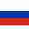

{kind=link}
Kamil Stoch
Polscy Skoczkowie
Kamil Wiktor Stoch (ur. 25 maja 1987 w Zakopanem) – polski skoczek narciarski, zawodnik klubu KS Eve-nement Zakopane, reprezentant Polski.
Pięciokrotny olimpijczyk. Trzykrotny indywidualny mistrz olimpijski (dwa tytuły w 2014 i jeden w 2018) oraz drużynowy brązowy medalista olimpijski z 2018. Dwukrotny drużynowy wicemistrz świata juniorów (w 2004 i 2005). Indywidualny mistrz świata z 2013 i wicemistrz z 2019, drużynowy mistrz świata z 2017 oraz trzykrotny drużynowy brązowy medalista MŚ (2013, 2015 i 2021). Indywidualny srebrny medalista MŚ w lotach narciarskich (2018) oraz dwukrotny drużynowy brązowy medalista MŚ w lotach (2018 i 2020). Dwukrotny zdobywca Pucharu Świata (w sezonach 2013/2014 i 2017/2018), ponadto raz drugi (2016/2017) i trzy razy trzeci (2012/2013, 2018/2019, 2020/2021) w klasyfikacji generalnej cyklu. W ramach PŚ zwyciężył w 39 konkursach i 80 razy stawał na podium. W konkursach indywidualnych PŚ zdobył łącznie 13 117 punktów (stan na 5 lutego 2023). Jedyny skoczek w historii, który wygrywał co najmniej jeden konkurs PŚ przez 11 lat kalendarzowych z rzędu (2011-2021). Zwycięzca trzech edycji Turnieju Czterech Skoczni (65., 66. i 69.) oraz dwóch edycji Raw Air (2018 i 2020), a także turniejów: Willingen Five 2018 i Planica 7 2018. W sezonie 2017/2018 jako drugi zawodnik w historii (po Svenie Hannawaldzie w sezonie 2001/2002) odniósł zwycięstwa we wszystkich czterech konkursach Turnieju Czterech Skoczni podczas jednej edycji. W Letnim Grand Prix trzykrotnie sklasyfikowany na drugim miejscu (w 2010, 2011 i 2020) oraz dwukrotnie na trzecim (w 2016 i 2022). Triumfator Letniego Pucharu Kontynentalnego w 2010.
Zdobywca 35 medali na mistrzostwach Polski, w tym 13 złotych (10 w rywalizacji zimowej i trzech w rywalizacji letniej). Rekordzista Polski w długości skoku narciarskiego (251,5 m w Planicy w 2017). Dwukrotnie wybierany najlepszym polskim sportowcem w plebiscycie „Przeglądu Sportowego” (w 2014 i 2017). Odznaczony Krzyżem Kawalerskim i Oficerskim Orderu Odrodzenia Polski oraz Medalem Holmenkollen.
W czerwcu 2003 wziął udział w konkursie o Puchar Prezesa Tatrzańskiego Związku Narciarskiego, sklasyfikowany został na 14. miejscu. W lipcu uplasował się na 24. miejscu w otwartym konkursie o Puchar Lata na Średniej Krokwi. 9 sierpnia 2003 zajął drugie miejsce w Pucharze McDonald’s. We wrześniu w letnich mistrzostwach Polski juniorów zdobył brązowy medal. W rywalizacji seniorów zajął 20. pozycję. W grudniu wystąpił w dwóch konkursach Alpen Cup 2003/2004 w Predazzo, gdzie był 7. i 34, natomiast w styczniowych zawodach z tej serii w Hirtenzarten zajął 39. miejsce. 26 grudnia wystartował w mistrzostwach Polski na dużej skoczni w Zakopanem, gdzie oddał skoki na odległość 116 i 120,5 metra kończąc rywalizację na 13. miejscu.
Wziął udział w czterech konkursach z cyklu Pucharu Kontynentalnego. Sezon rozpoczął 27 grudnia w Engelbergu, gdzie zajął 47. miejsce, następnie w Seefeld znalazł się na 69. pozycji. 3 stycznia w Planicy pierwszy raz w karierze zdobył punkty w PK, dzięki zajęciu 20. miejsca w konkursie. W tym sezonie po raz pierwszy wystąpił w Pucharze Świata – 17 stycznia 2004 zakwalifikował się do konkursu w Zakopanem. W pierwszej serii wykonał skok na odległość 105,5 m i ukończył konkurs na 49. miejscu. 29 stycznia w Karpaczu w mistrzostwach Polski zajął 6. miejsce, tracąc do podium 2 punkty. Dwa dni później na Wielkiej Krokwi w Zakopanem znalazł się na tej samej pozycji. 5 lutego zdobył swój pierwszy medal na zawodach rangi mistrzowskiej. Na MŚJ 2004 w Strynie reprezentacja Polski ze Stochem w składzie zdobyła srebro w konkursie drużynowym. W drużynie lepszą notę od Stocha uzyskał jedynie Mateusz Rutkowski, późniejszy indywidualny mistrz. W konkursie indywidualnym Stoch zajął 16. miejsce. W mistrzostwach Tatrzańskiego Związku Narciarskiego zdobył brązowy medal w klasyfikacji seniorów (przegrywając z Tomaszem Pochwałą i Marcinem Bachledą) i złoty w klasyfikacji juniorów. Wziął też udział w Ogólnopolskiej Olimpiadzie Młodzieży, gdzie zdobył dwa złote medale na normalnej skoczni w Szczyrku oraz drużynowo brązowy.
Wystąpił jeszcze pod koniec sezonu w zawodach PK w Kuopio, gdzie był 42. Z dorobkiem 11 punktów zdobytych w Planicy ukończył sezon na 109. miejscu. Na koniec sezonu wygrał na Średniej Krokwi Puchar Zespołu Szkół Mistrzostwa Sportowego.
 | |  |  | | |  | |  | | | | |  | | | | | Punkty | |||||
|---|---|---|---|---|---|---|---|---|---|---|---|---|---|---|---|---|---|---|---|---|---|---|---|
| - | - | - | - | - | - | - | - | - | - | - | 49 | - | - | - | - | - | - | - | - | - | - | - | 0 |
Sezon rozpoczął od zajęcia 15. miejsca w Pucharze Prezesa Tatrzańskiego Związku Narciarskiego. 9 października podczas letnich mistrzostw Polski na Wielkiej Krokwi zajął siedemnaste miejsce, tracąc 101,5 pkt do zwycięzcy – Adama Małysza. Następnego dnia na normalnej skoczni uplasował się na siódmej lokacie, tracąc do ponownego zwycięzcy, Małysza, 44,0 pkt. W 2004 po raz pierwszy wziął udział w Letnim Grand Prix, nie dostał się jednak do zakopiańskiego konkursu i na tym zakończył rywalizację w tamtej edycji.
Startował w konkursach Pucharu Kontynentalnego przez pierwszą połowę sezonu – zanotował udział w 17 konkursach. Rozpoczął od występu w Rovaniemi, gdzie zajął 15. miejsce. W następnym konkursie w tym samym miejscu spadł na 35. pozycję, w Lahti zaś nie punktował, znajdując się w szóstej i siódmej dziesiątce. 18 grudnia w Harrachovie zajął 24. miejsce. Następnego dnia był 35. Po tym konkursie plasował się na 36. miejscu w klasyfikacji generalnej Pucharu. 26 grudnia w St. Moritz stanął na swoim pierwszym w karierze podium w PK – zajął 3. miejsce. Dzień później w Engelbergu ponownie zyskał punkty, kończąc konkurs na 13. pozycji, i awansował na 23. miejsce w klasyfikacji generalnej. W dwóch kolejnych konkursach zajmował miejsca poza pierwszą trzydziestką (był 42. w drugim konkursie w Engelbergu i 62. w Seefeld), jednak później zdobywał punkty we wszystkich kolejnych konkursach, w których wystąpił. Uplasował się na 21. i 13. pozycji w Planicy oraz na 12., 19. i 17. miejscu w Sapporo. Po raz ostatni w tamtym sezonie PK pojawił się na skoczni w Bischofshofen, zajmując miejsca 22. i 23. Sezon ukończył na 38. miejscu w końcowej klasyfikacji generalnej.
W konkursach Pucharu świata wystąpił czterokrotnie, oprócz tego trzykrotnie nie zakwalifikował się do konkursu. Ten sezon PŚ rozpoczął od występu w Zakopanem, gdzie znalazł się na 44. miejscu. Do drugiego z polskich konkursów nie zakwalifikował się. 11 lutego w Pragelato, w 33. rocznicę zdobycia przez Wojciecha Fortunę złotego medalu olimpijskiego, zdobył pierwsze w karierze punkty w PŚ – skoczył 118,5 m i 121,5 m, zajmując dzięki temu 7. miejsce z notą łączną 209 punktów. Adam Małysz (9. pozycja w konkursie) po raz pierwszy od grudnia 2000 nie był najwyżej sklasyfikowanym Polakiem w zawodach o PŚ. Dzień później wraz z reprezentacją był czwarty w jednoseryjnym konkursie drużynowym. 20 lutego zadebiutował w rywalizacji rangi mistrzostwa świata w trakcie konkursu drużynowego na skoczni normalnej. Polska (ze Stochem w składzie) zajęła 6. miejsce. Wcześniej, na skoczni normalnej, nie przebrnął kwalifikacji, w których zajął 53. miejsce. W konkursie indywidualnym na dużej skoczni po skoku na odległość 117,5 metra zajął 37. miejsce. W konkursie drużynowym na tej samej skoczni Polska nie zakwalifikowała się do drugiej serii, zajmując 9. miejsce.
Nie zakwalifikował się do konkursów Turnieju Nordyckiego 2005 w Lahti i Kuopio. W konkursie w Lillehammer zajął 40. miejsce, natomiast w Oslo znalazł się na 34. pozycji. Cykl turniejowy ukończył na 54. miejscu. Sezon 2004/2005 w PŚ zakończył na 53. miejscu z 36 punktami zdobytymi we Włoszech. W tym sezonie po raz ostatni brał udział w mistrzostwach świata juniorów. W rywalizacji drużynowej był najlepszym z Polaków (w drużynie skakali także: Piotr Żyła, Paweł Urbański i Wojciech Topór. Do zwycięskiej Słowenii reprezentacja Polski straciła 4 punkty. W konkursie indywidualnym Stoch zajął 8. miejsce. W pierwszej serii skoczył 95 m i przegrywał tylko z Joonasem Ikonenem, jednak w drugiej nie ustał skoku na odległość 96 m, co kosztowało go spadek w klasyfikacji.
W mistrzostwach Polski zdobył pierwsze seniorskie medale: brązowy na skoczni normalnej w Szczyrku (do zwycięzcy, Adama Małysza, stracił ponad 10 punktów) i srebrny na dużej skoczni w Zakopanem (do Małysza stracił 40,3 pkt).
| | | | | | | | | | | | | | |  | | | | |  | | Punkty | ||||||
|---|---|---|---|---|---|---|---|---|---|---|---|---|---|---|---|---|---|---|---|---|---|---|---|---|---|---|---|---|
| - | - | - | - | - | - | - | - | - | - | - | - | - | - | - | - | - | 44 | q | - | - | 7 | q | q | 40 | 34 | - | - | 36 |
W czerwcowym Pucharze Doskonałego Mleka uplasował się na 5. pozycji. W letnich mistrzostwach Polski zajął 7. miejsce na Wielkiej Krokwi oraz 5. miejsce na Średniej Krokwi. Odnotował dobre występy w LGP 2005 – wystartował w siedmiu z ośmiu zawodów, punktując we wszystkich. Nie pojawił się jedynie na starcie w Hinterzarten. 12 sierpnia w Einsiedeln zajął trzecie miejsce w kwalifikacjach. Dzień później zajął jedenaste miejsce w konkursie. Kolejnego dnia rozegrano zawody w Courchevel. Stoch był ósmy, tym samym po raz pierwszy znajdując się w pierwszej dziesiątce. W Zakopanem odnotował najsłabszy występ w tym sezonie, kończąc zawody na 24. pozycji. W Predazzo i Bischofshofen znajdował się w drugiej dziesiątce (odpowiednio 12. i 15. lokata). Najlepszy wynik osiągnął 10 września w Hakubie. Po pierwszym skoku zajmował trzecie miejsce, by ostatecznie uplasować się na piątej pozycji, ze stratą 8,5 pkt do podium. Dzień później w tym samym miejscu zajął 13. pozycję. Grand Prix ukończył na 11. miejscu w klasyfikacji generalnej, z dorobkiem 166 punktów. Była to najwyższa pozycja wśród reprezentantów Polski.
Pierwsze konkursy Pucharu świata w sezonie 2005/2006 odbyły się 26 listopada w Ruce. W pierwszym, jednoseryjnym konkursie Stoch zajął 26. miejsce. Drugi konkurs zakończył na 43. pozycji. Tydzień później w obu konkursach Lillehammer znalazł się w czwartej dziesiątce – na 35. i 33. miejscu. Kolejne punkty do klasyfikacji generalnej zdobył w pierwszym konkursie w Harrachovie (25. miejsce). Następnego dnia został zdyskwalifikowany. W zamykającym pierwszą część sezonu konkursie w Engelbergu znalazł się na 41. miejscu. Podczas Świątecznego Konkursu skoków, rozgrywanego 26 grudnia 2005 w Zakopanem, zajął 2. lokatę, przegrywając z Adamem Małyszem o 22,3 punktu. Podczas zawodów 54. Turnieju Czterech Skoczni w Oberstdorfie zajął 49. miejsce. Zawody w Garmisch-Partenkirchen ukończył na 29. miejscu, awansując na 32. miejsce w klasyfikacji łącznej TCS. W Innsbrucku po skoku z telemarkiem na 128,5 m zajął drugie miejsce w kwalifikacjach, przegrywając jedynie z Ahonenem. Skok został uznany w mediach za sensacyjny. W konkursie głównym po skoku na odległość na odległość 116 metrów przegrał pojedynek w parze z Michaelem Uhrmannem i znalazł się na 41. pozycji. Również w kończącym turniej konkursie Bischofshofen nie zdołał awansować do drugiej serii kończąc zawody na był 33. miejscu. Ukończył Turniej na 34. miejscu z dorobkiem punktowym 486,1.
Stoch został powołany na Mistrzostwa Świata w Lotach Narciarskich 2006 w Kulm. W pierwszym skoku uzyskał odległość 152,0 m i nie zakwalifikował się do kolejnych serii – zajął 35. miejsce. W konkursie drużynowym startował w trzeciej grupie. Przed jego próbą Polska była siódma. Na oddanie swojego skoku musiał czekać kilkanaście minut ze względu na trudne warunki atmosferyczne. Ostatecznie uzyskał odległość 137,5 m. Polska nie awansowała do finału, zajmując ostatnie, dziewiąte miejsce i tracąc 82,9 pkt do ósmych Czechów. Stoch nie startował w konkursach PŚ w Sapporo. Do rywalizacji powrócił 28 stycznia podczas zawodów w Zakopanem. Po skoku na odległość 125,5 metra zajmował 8. pozycję był ósmy. Ostatecznie po skoku na odległość 126 metrów w drugiej serii z notą 250,2 punktu zajął 15. miejsce (najlepsze w sezonie). W drugim konkursie oddał skoki na odległość 123,5 i 126,5 metra, co przełożyło się na 19. miejscePo tym występie zajmował 45. miejsce w klasyfikacji generalnej. Stoch podobnie jak reszta polskiej kadry nie wziął udziału w konkursach w Willingen (przygotowywała się ona wówczas w Ruhpolding do nadchodzących igrzysk).
7 lutego odczytał tekst ślubowania olimpijskiego. 11 lutego rozpoczęła się rywalizacja w ramach ZIO 2006 w Turynie. Zawody skoków rozgrywano w Pragelato. W pierwszej rundzie konkursu głównego na normalnej skoczni lądował na 100. metrze i był piętnasty. W finałowym skoku uzyskał odległość 98,5 m i ostatecznie zajął szesnastą pozycję. W pierwszej serii konkursu na dużej skoczni osiągnął 116,5 m i awansował z ostatniego, 30. miejsca. Otwierając drugą rundę, wylądował na 121. metrze i przesunął się na 26. lokatę. W konkursie drużynowym skakał w drugiej grupie. W otwierającej serii uzyskał 122 m i pozwolił drużynie na awans z 9. na 8. pozycję. Polska ostatecznie zajęła piątą lokatę w gronie szesnastu drużyn. Po zakończeniu igrzysk rozegrano mistrzostwa Polski. W konkursie na skoczni dużej na Wielkiej Krokwi Stoch oddał skoki na odległość 128,5 i 126 metrów. Tym samym wywalczył brązowy medal przegrywając z Robertem Mateją i Adamem Małyszem. Na średnim obiekcie oddał skoki na odległość 88,5 i 87,5 zdobywając pod raz drugi w karierze srebrny medal, tracąc do zdobywcy tytułu, Małysza, 7,5 pkt.
4 marca od konkursu drużyn w Lahti rozpoczął się Turniej Nordycki 2006. Stoch upadł w drugiej serii. Reprezentacja Polski zajęła ósme miejsce. W rywalizacji indywidualnej zajął 40. miejsce. Nie punktował także w następnych konkursach turnieju: Kuopio był 34., w Lillehammer 34., a w Oslo zajął 44. pozycję. W końcowej klasyfikacji TN znalazł się na 38. lokacie. Do przedostatniego konkursu sezonu PŚ na Velikance nie awansował, uzyskując 46. miejsce w kwalifikacjach. W sumie w tym sezonie wziął udział w szesnastu konkursach PŚ, punktując w pięciu z nich. Oprócz tego raz nie zakwalifikował się do konkursu i raz został zdyskwalifikowany. Uplasował się na 45. miejscu w klasyfikacji generalnej, z dorobkiem 41 pkt.
| | | | | | | | | | | | | | | | | Punkty | |||||
|---|---|---|---|---|---|---|---|---|---|---|---|---|---|---|---|---|---|---|---|---|---|---|
| 26 | 43 | 35 | 33 | 25 | dq | 41 | 49 | 29 | 41 | 33 | - | - | 15 | 19 | - | 40 | 34 | 34 | 44 | q | - | 41 |
14 października na letnich mistrzostwach Polski zajął 6. pozycję na dużej skoczni, a na normalnej zdobył brązowy medal. Wcześniej zajął 3. miejsce w zawodach o Puchar Doskonałego Mleka. Wystartował w konkursach z cyklu Letniego Grand Prix, który rozpoczął się 8 sierpnia od konkursu drużynowego w Hinterzarten, w którym reprezentanci Polski zajęli 5. miejsce. Dzień później był 45. W konkursie w Predazzo również nie udało mu awansować do drugiej serii kończąc rywalizację na 35. pozycji. Pierwsze punkty do klasyfikacji LGP zdobył 12 sierpnia w konkursie w Einsiedeln, gdzie zajął 16. miejsce. Dwa dni później ponownie awansował do "30" podczas rywalizacji w Courchevel, zajął 22. miejsce. 26 sierpnia odbył się konkurs na Wielkiej Krokwi w Zakopanem, gdzie zajął 21. miejsce. Swój najlepszy wynik w tamtym sezonie letnim uzyskał 2 września w konkursie w Kranju. Oddał skoki na odległość 101 i 102 metrów i z notą 233,4 punktu uplasował się na 8. miejscu. W klasyfikacji generalnej . Na zawody w Hakubie nie pojechał, w Klingenthal nie zakwalifikował się, a w Oberhofie nie wystąpił. W całym cyklu LGP zdobył 66 punktów, co przełożyło się na 37. pozycję w klasyfikacji generalnej.
Nowy sezon Pucharu świata rozpoczął się 24 listopada od zawodów w Ruce, gdzie nie awansował do drugiej serii – znalazł się na 46. miejscu. W następnych konkursach, w Lillehammer był 40. i 26..W klasyfikacji PŚ był wtedy 24. Nie zakwalifikował się do zawodów PŚ w Engelbergu. 27 i 28 grudnia wziął udział w rozgrywanych tam zawodach Pucharu Kontynentalnego – 27 lutego zajął 10. miejsce. Następnego dnia po raz drugi w karierze stanął na podium PK, zajmując trzecią lokatę. Wziął udział w 55. Turnieju Czterech Skoczni. W pierwszym konkursie w Oberstdorfie przegrał pojedynek KO z Roarem Ljokelseoyem, jednak wszedł do drugiej serii jako "szczęśliwy przegrany" i ostatecznie zakończył konkurs na 29. miejscu. W jednoseryjnym konkursie w Garmisch-Partenkirchen pokonał w parze reprezentanta Włoch Sebastiana Colloredo zajmując na 21. miejsce. W Innsbrucku po skokach na odległość 120 i 115,5 metra zajął 15. miejsce. W konkurs w Bischofshofen oddał skoki na odległość 126,5 i 134,5 metra, co przełożyło na najlepsze w tym sezonie – 9. miejsce w konkursie PŚ. W klasyfikacji Turnieju z notą 810,9 punktu zajął 15. pozycję.
Po powrocie z TCS wziął udział w zawodach PŚ w lotach w Vikersund, gdzie po skokach na odległość 164,5 i 174,5 metra zajął 25. miejsce. Następnie wystąpił w Zakopanem, gdzie nie zdołał awansował do drugiej serii kończąc rywalizację na 36. miejscu. Również w konkursach w Oberstdorfie nie udało mu się awansować do drugiej serii zajmując zajął 50. i 41. miejsce. Udało się mu to w pierwszy konkursie Titisee-Neustadt, gdzie oddał skoki na odległość 125 i 133,5 metra kończąc rywalizację na 17. miejscu. Drugi konkurs zakończył na 34. pozycji. Ponownie awansował do "30" w Klingenthal, gdzie zajął 24. miejsce. Razem z resztą kadry nie brał udział w konkursach w Willingen w celu przygotowania przed mistrzostwami świata w Sapporo. 17 lutego, na mistrzostwach Polski na normalnej skoczni oddał skoki na odległość 84,5 i 77,5 metra zdobywając srebrny medal. Strata do zwycięzcy – Adama Małysza, 32 pkt. Dzień wcześniej ze swoją drużyną, LKS Poroniec Poronin, w konkursie drużynowym zajął 4. miejsce.
Stoch brał udział w MŚ 2007 w Sapporo. W pierwszej serii konkursu na normalnej skoczni osiągnął odległość 117,5 m i plasował się na dziesiątej lokacie. W finałowej kolejce wylądował na 121 m i ostatecznie uplasował się na trzynastym miejscu. 25 lutego rozegrano konkurs drużyn na dużym obiekcie. Stoch startował w otwierającej grupie. W pierwszej serii uzyskał 129 m i jego reprezentacja plasowała się na drugiej pozycji. Na koniec serii była czwarta, tracąc 3 pkt do trzeciej Japonii. W drugiej lądował dziewięć metrów bliżej, a reprezentacja Polski ostatecznie zajęła piąte miejsce. Konkurs indywidualny na dużej skoczni rozegrano 3 marca. W pierwszej z liczonych serii uzyskał 92,5 m, co dawało mu trzynaste miejsce na półmetku rywalizacji. W drugiej kolejce oddał skok o pół metra dłuższy i był 11. Następnie wystąpił w konkursach z cyklu Turnieju Nordyckiego. Zajął 12. miejsce w Lahti i 17. miejsce w Kuopio oraz 45. i 19. miejsce w Oslo. Turniej ukończył na 21. pozycji z notą 605,9 punktu. Podczas trzech ostatnich zawodów sezonu rozgrywanych w Planicy był kolejno 24., 36. i 11. (w trzecim konkursie ustanowił swój nowy rekord życiowy skokiem na 210,5 m w jedynej rozegranej serii).
W końcowej klasyfikacji generalnej zajął 30. pozycję ze 168 pkt, co było drugim wynikiem wśród Polaków. W tamtym sezonie PŚ wystąpił w dwudziestu jeden zawodach, punktował trzynastokrotnie, raz znalazł się w pierwszej dziesiątce.
| | | | | | | | | | | | | | | | | | | | | Punkty | |||
|---|---|---|---|---|---|---|---|---|---|---|---|---|---|---|---|---|---|---|---|---|---|---|---|---|
| 46 | 40 | 26 | q | q | 29 | 21 | 15 | 9 | 25 | 36 | 50 | 41 | 17 | 34 | 24 | - | 12 | 17 | 45 | 19 | 24 | 36 | 11 | 168 |
Wystąpił w dwóch konkursach LPK 2007 – obydwa odbyły się w Villach. 15 września zajął 12. miejsce, następnego dnia znalazł się na 16. pozycji. W klasyfikacji końcowej cyklu zajął 46. lokatę. W trzeciej edycji Pucharu Doskonałego Mleka zajął 12. miejsce. Zawody o Puchar Solidarności ukończył na 2. miejscu. W letnich Mistrzostwach Polski zdobył brązowy medal na dużej skoczni oraz srebrny na normalnej. LGP 2007 rozpoczął od 39. pozycji w Hinterzarten. W Courchevel odnotował lepszy występ – zajął 14. miejsce. W Pragelato i Einsiedeln kończył zawody odpowiednio na 29. i 19. pozycji. W klasyfikacji Turnieju Czterech Narodów zajął 19. miejsce. W Zakopanem był 27. Do zawodów, po nieobecności w Hakubie, powrócił pod koniec sezonu – 3 października w Oberhofie po raz pierwszy w karierze zwyciężył w konkursie LGP. Po raz pierwszy w zawodach tej rangi wygrał inny polski skoczek niż Adam Małysz. Tego dnia zdobył też tytuł Man of the Day. W Klingenthal znów znalazł się w czołówce – na 5. miejscu. W całym cyklu LGP zdobył 181 punktów, co przełożyło się na 12. pozycjęw klasyfikacji generalnej.
Początek zimowego sezonu był dla Stocha nieudany. Konkurs drużynowy w Ruce reprezentacja Polski z udziałem Stocha zakończyła rywalizację w pierwszej serii na 11. miejscu.Nie zakwalifikował się do konkursu indywidualnego na tej skoczni. W pięciu kolejnych zawodach nie zdołał awansować do drugiej serii – w Trondheim był 34. i 35., w Villach dwukrotnie 34., w pierwszych zawodach w Engelbergu 41. Pierwsze punkty zdobył podczas drugiego ze szwajcarskich konkursów – znalazł się tam na 18. pozycji. 26 grudnia w konkursie na Wielkiej Krokwi po raz pierwszy w karierze wywalczył złoty medal Mistrzostw Polski w skokach narciarskich. Stoch oddał skoki na odległość 130 i 128 metrów wyprzedzając Klemensa Murańskę i Krzysztofa Miętusa. Mistrzostwa odbyły się pod nieobecność Adama Małysza. 56. Turnieju Czterech Skoczni rozpoczął od zajęcia 22. lokaty w konkursie w Oberstdorfie. Konkurs w Garmisch-Partenkirchen ukończył na 23. miejscu. W dwóch konkursach w Bischofshofen zajął 25. i 35. pozycję. Cały TCS ukończył na 21. pozycji.
12 stycznia wystąpił w Predazzo, gdzie zaliczył najlepszy występ w sezonie. W jednoseryjnym konkursie oddał skok na odległość 125,5 metra, co przełożyło się na 6. miejsce. Drugi konkurs zakończył na 19. miejscu. Tydzień później odbył się konkurs lotów narciarskich w Harrachovie, gdzie zajął 12. pozycję. W rywalizacji w Zakopanem również punktował zajmując 21. i 25. miejsce. W pierwszym konkursie w Sapporo, po skoku na odległość 104 metry, znalazł się na końcu stawki (44. pozycja). W drugim konkursie zajął 20. miejsce. Nie zdołał zakwalifikować się do pierwszego konkursu w Libercu. Drugi konkurs zakończył na 24. miejscu. Nie przebrnął kwalifikacji do konkursu indywidualnego w Willingen, ale wystąpił w rywalizacji drużynowej na tej skoczni. Reprezentacja Polski nie zdołała awansować do drugiej serii kończąc zawody już w pierwszej serii na 10. pozycji. Wziął udział w mistrzostwach świata w lotach 2008 w Oberstdorfie. Konkurs indywidualny zakończył już w pierwszej serii, w której trakcie oddał skok na odległość 174 metrów. W zawodach drużynowych Polska zajęła 10. pozycję i nie zakwalifikowała się do drugiej serii – Stoch skoczył 167,0 m. Wziął udział w mistrzostwach Polski. W konkursie na skoczni dużej oddał skoki na odległość 129,5 i 118 metrów. Z notą łączną 243 punkty znalazł się zaraz za podium, tracąc 3,9 punktu do brązowego medalisty, Krzysztofa Miętusa. Dwa dni później w konkursie na skoczni normalnej zajął 14. miejsce.
Wziął udział w konkursach z cyklu Turnieju Nordyckiego. Uzyskał 23. i 32. miejsce w konkursach w Kuopio, 35. w Lillehammer i 30. w Oslo. Cały turniej zakończył na 36. miejscu. W finałowych zawodach PŚ w Planicy dwukrotnie zajął 29. miejsce. Wziął udział w sumie w 24 konkursach PŚ 2007/2008 – punktował w 15 spośród nich. Zdobył 157 punktów i w klasyfikacji generalnej zajął 30. miejsce (drugi najlepszy wynik spośród polskich skoczków).
| | | | | | | | | | | | | | | | | | | | Punkty | |||||||
|---|---|---|---|---|---|---|---|---|---|---|---|---|---|---|---|---|---|---|---|---|---|---|---|---|---|---|---|
| q | 34 | 35 | 34 | 34 | 41 | 18 | 22 | 23 | 25 | 35 | 6 | 19 | 12 | 21 | 25 | 44 | 20 | q | 24 | q | 23 | 32 | 35 | 30 | 29 | 29 | 157 |
W trakcie lipcowego zgrupowania doznał kontuzji (zwichnął obojczyk). Jego lewy bark został odrutowany i wkręcono w niego śrubę. W związku z tym nie brał udziału w konkursach z cyklu LGP i w LPK. Sezon zimowy rozpoczęła rywalizacja w Ruce, gdzie nie zdołał awansować do drugiej serii kończący rywalizację na 48. pozycji. Wziął udział również w konkursie drużynowym na tej skoczni, gdzie reprezentacja Polski zdobyła 7. miejsce. Konkursy w Trondheim zakończył na pierwszej serii (46. i 47. lokata). Stoch nie brał udziału w zawodach w Pragelato. Nie udało się mu zakwalifikować do konkursów w Engelbergu. Pod koniec grudnia brał udział w konkursach Pucharu Kontynentalnego organizowanych w Szwajcarii. Zajął miejsca w pierwszej dziesiątce: w pierwszym konkursie ósme, a w drugim – siódme. W związku ze startami w Szwajcarii, w otwierającym 57. Turniej Czterech Skoczni konkursie w Oberstdorfie nie wystartował. W noworocznych zawodach w Garmisch-Partenkirchen przegrał pojedynek w parze z Ilją Roslakowem zajmując 47. miejsce. W Innsbrucku zajął 27. lokatę i tym samym po raz pierwszy w sezonie awansował do drugiej serii. Konkurs Bischofshofen ukończył na 28. miejscu. W klasyfikacji generalnej TCS znalazł się na 36. pozycji.
Wobec słabych wyników decyzją trenera Łukasza Kruczka reprezentanci Polski nie wzięli udziału w konkursach lotów narciarskich Na obiekcie Kulm w Tauplitz. Powrócił do rywalizacji 16 stycznia podczas konkursu w Zakopanem, gdzie oddał skoki na odległość 119,5 i 115 metra uzyskując 11. miejsce. Następnego dnia ukończył zawody na 14. pozycji. W kolejny weekend odbyły się konkursy w kanadyjskim Whistler w ramach próby przedolimpijskiej. W obu konkursach udało się mu awansować do drugiej serii kończąc zawody na 19. i 24. miejscu. Ostatniego dnia stycznia wziął udział w konkursie PŚ w Sapporo, gdzie był 13. 7 lutego wystartował w konkursie drużynowym w Willingen, gdzie reprezentanci Polski zdobyli 8. miejsce. Konkurs indywidualny zakończył w pierwszej serii na 35. miejscu. Również w konkursie w Klingenthal nie zdołał awansować do drugiej serii kończąc rywalizację na 41. pozycji. Nie wystąpił w konkursach na skoczni mamuciej w Oberstdorfie. 14 lutego 2009 zdobył mistrzostwo Polski na skoczni w Wiśle. W drugiej serii ustanowił nowy zimowy rekord obiektu – 132 m.
Stoch został powołany na mistrzostwa świata w Libercu. 21 lutego odbył się konkurs na skoczni normalnej, w którym zajął czwarte miejsce. Wygrał wtedy m.in. z Thomasem Morgensternem, Martinem Schmittem, Andreasem Küttelem, Takanobu Okabe i Adamem Małyszem. Po pierwszej serii, w której osiągnął 99,5 m był dziewiąty, jednak w drugiej serii uzyskał najdłuższą ustaną odległość – 100,5 m. Brązowy medal przegrał z Simonem Ammannem o 4,5 pkt. Podczas treningu na dużej skoczni upadł i stłukł prawy bark, jednak kontuzja okazała się niegroźna. W kwalifikacjach zajął drugie miejsce, przegrywając jedynie z Kasaim. W jednoseryjnym konkursie po skoku na odległość 119,5 metra z notą 113,6 punktu zajął 24. miejsce. W konkursie drużynowym Stoch startował w pierwszej grupie. Po jego skoku na 123 m drużyna była piąta, a na koniec I serii znajdowała się na trzeciej lokacie. W drugiej kolejce uzyskał trzy metry więcej, a polski zespół spadł na czwarte miejsce, które utrzymał do końca konkursu, przegrywając medal o 9,1 pkt. z Japończykami.
Po skoku na odległość 100 metrów nie zakwalifikował się oo otwierającego cykl Turnieju Nordyckiego konkursu w Lahti. Kolejne konkursy zakończył poza czołową "30" (45. miejsce w Kuopio i 42. miejsce w Lillehammer). Nie zakwalifikował się do konkursu indywidualnego lotów narciarskich Vikersund, zaś w konkursie drużynowym reprezentacja Polski z udziałem Stocha zajęła 7. miejsce. Turniej Nordycki ukończył na 55. miejscu, zdobywając 143,2 punktów. Sezon zakończyły konkursy lotów narciarskich w Planicy. 20 marca w rywalizacji indywidualnej zajął 10. miejsce. Następnego dnia miała miejsce rywalizacja drużynowa. Stoch wystartował jako pierwszy z Polaków – uzyskał 205,5 m, a reprezentacja Polski po pierwszej kolejce była czwarta. Finalnie Polska zajęła drugie miejsce, za Norwegami (ze stratą ponad 40,1 punktu), a Kamil Stoch po raz pierwszy stanął na podium Pucharu Świata. Natomiast w kończącym sezon konkursie zajął najlepsze tamtej zimy, ósme miejsce, awansując po skoku na odległość 206,5 metra z zajmowanego po pierwszej kolejce jedenastego.
Łącznie wziął udział w 17 konkursach z cyklu PŚ, punktował w dziewięciu z nich. Skończył sezon po raz trzeci z rzędu jako drugi najlepszy Polak na 30. miejscu z dorobkiem 146 punktów. W klasyfikacji lotów narciarskich zajął 22. miejsce.
| | | | | | | | | | |  | | | | | | | | | | | | Punkty | ||||
|---|---|---|---|---|---|---|---|---|---|---|---|---|---|---|---|---|---|---|---|---|---|---|---|---|---|---|---|
| 48 | 46 | 47 | - | - | q | q | - | 47 | 27 | 28 | - | - | 11 | 14 | 19 | 24 | 13 | 35 | 41 | - | q | 45 | 42 | q | 10 | 8 | 146 |
Udział w Letnim Pucharze Kontynentalnym ograniczył jedynie do zawodów w Słowenii. Konkurs w Velenje ukończył na 19. miejscu, zaś w Kranju zajął 22. i 32. pozycję. W klasyfikacji generalnej cyklu zajął 66. miejsce z 21 punktami. Na początku września wystartował w Pucharze Solidarności, zajmując 4. lokatę w klasyfikacji konkursu. 10 października na Średniej Krokwi w letnich mistrzostwach Polski oddał skoki na odległość 83,5 i 86,5m metra i z notą 227 punktu zdobył brązowy medal przegrywając z Adamem Małyszem i Łukaszem Rutkowskim. Dzień później zajął 6. miejsce na dużej skoczni. Letnie Grand Prix rozpoczął od siódmej pozycji w drużynowym konkursie w Hinterzarten. Indywidualnie zajął tam 24. miejsce, a do konkursu w Pragelato nie zakwalifikował się (po raz pierwszy od 2006). W Courchevel zajął 24. pozycję, w Einsiedeln i Zakopanem zajmował miejsca w drugiej dziesiątce (kolejno 16., 16. i 17.) Na zawodach w Hakubie nie pojawił się, a w Klinghental zajął 40. miejsce, nie punktując w konkursie LGP po raz pierwszy od początku sezonu LGP 2007. Zajął 32. miejsce w klasyfikacji generalnej LGP i 21. w klasyfikacji Turnieju Czterech Narodów.
Sezon zimowy otwarły konkursy w Ruce przeprowadzone 27-28 listopada. W rywalizacji drużynowej polska drużyna była piąta. Stoch w konkursie indywidualnym zajął 2. 5 grudnia odbył się konkurs w Lillehammer, gdzie Stoch zajął 20. miejsce. Dzień później był siódmy (najwyżej sklasyfikowany Polak). Po zawodach w Norwegii awansował na czternaste miejsce w klasyfikacji łącznej. Od 18 grudnia rozgrywano trzy konkursy PŚ w Engelbergu. W pierwszym z nich był dziesiąty. W następnym zajął siedemnaste miejsce. W obu tych konkursach był najlepszym reprezentantem Polski. W ostatnim z trzech konkursów był jedenasty. Po tych występach plasował się na 13. miejscu w generalnej klasyfikacji PŚ. W przeprowadzonym w Szczyrku konkursie mistrzostw Polski oddał skoki na odległość 102 i 94,5 metra zdobywając srebrny medal. Strata do zwycięzcy – Adama Małysza wyniosła 13 punktów.
Do otwierającego 58. Turniej Czterech Skoczni konkursu w Oberstdorfie nie zakwalifikował się. W konkursie w Garmisch-Partenrkirchen przegrał pojedynek w parze z Bjørnem Einarem Romørenem, ale wszedł do drugiej serii jako „szczęśliwy przegrany” i ostatecznie zajął 23. miejsce. Również w następnym konkursie, w Innsbrucku, awansował do drugiej serii i zajął 19. miejsce. Wieńczący turniej konkurs w Bischofshofen zakończył w pierwszej serii na 44. miejscu. W klasyfikacji końcowej turnieju znalazł się na 30. pozycji. Nie zakwalifikował się do konkursów lotów narciarskich w Bad Mitterndorf. Nie wziął udziału w konkursach w Sapporo. Wziął natomiast udział w zawodach w Zakopanem w dniach 22–23 stycznia. W pierwszym był 27., a w drugim uplasował się o jedną lokatę niżej. Zabrakło go w zawodach PŚ w Niemczech w cyklu FIS Team Tour.
Głównymi zawodami sezonu były ZIO 2010 w Vancouver. W pierwszej serii konkursu na normalnej skoczni Stoch skoczył na 98,5 m i był 22. W finałowej wylądował trzy metry bliżej, co pozwoliło mu uzyskać 27. miejsce. 20 lutego odbył się konkurs na skoczni dużej. W pierwszej kolejce osiągnął 126 m i plasował się na trzynastym miejscu. Drugi skok był o 2,5 m krótszy i ostatecznie Polak został sklasyfikowany na 14. miejscu. W konkursie drużynowym Polska zajęła pozycję 6. – Stoch skoczył 126,5 i 134,5 m. W zawodach Pucharu Kontynentalnego wystartował tylko raz – 27 lutego w Wiśle, gdzie zajął 3. miejsce (było to także jego trzecie podium w PK w karierze). Został powołany na konkursy z cyklu Turnieju Nordyckiego. W otwierającym rywalizację jednoseryjnym konkursie drużynowym w Lahti polscy skoczkowie zajęli czwarte miejsce tracąc do podium 1,3 puntku. W rywalizacji indywidualnej na tej skoczni zajął 18. miejsce, natomiast konkurs w Kuopio zakończył na 21. miejscu. W Lillehammer zamknął pierwszą dziesiątkę. W Oslo wygrał kwalifikacje, zaś w konkursie znalazł się na 22. pozycji. Turniej ukończył na 15. miejscu. Zajął 24. miejsce w klasyfikacji generalnej PŚ – wziął udział w piętnastu konkursach.
Stoch został powołany na rozpoczynające się 18 marca mistrzostwa świata w lotach narciarskich w Planicy. Zajął trzecie miejsce w serii kwalifikacyjnej, oddając skok na 201,5 m. W pierwszej serii konkursu indywidualnego skoczył 186,5 m i był 22. W drugiej serii przekroczył o 7,5 metra granicę dwustu metrów, dzięki czemu został tymczasowym liderem konkursu. Po pierwszym dniu rywalizacji Stoch był na 17. miejscu. Następnego dnia, w trzeciej próbie Stoch uzyskał 203,5 m, co przy długiej próbie Johana Remena Evensena spowodowało spadek Polaka o jedną pozycję. W ostatniej rundzie Stoch poprawił o 7,5 metra swój rekord życiowy, lądując na 218 metrze i obejmując prowadzenie z przewagą 24,3 punktu nad dotychczas przewodzącym stawce skoczków Uhrmannem. Ostatecznie zajął 16. miejsce w klasyfikacji konkursu indywidualnego. W konkursie drużynowym uzyskał 197,5 metra w pierwszej serii. W drugiej serii skoczył na najdalszą odległość – uzyskał 222,5 metra, co było jego nowym rekordem osobistym. Dobry skok Stocha dał reprezentacji Polski szansę na medal, którą jednak straciła przez słabą próbę Łukasza Rutkowskiego. Polska zajęła 4. miejsce.
| | | | | | | | | | | | | | | | | | Punkty | |||||
|---|---|---|---|---|---|---|---|---|---|---|---|---|---|---|---|---|---|---|---|---|---|---|---|
| 24 | 20 | 7 | 10 | 17 | 11 | q | 23 | 19 | 44 | q | q | - | - | 27 | 28 | - | - | - | 18 | 21 | 10 | 22 | 203 |
Stoch znalazł się w kadrze A reprezentacji Polski na sezon 2010/2011, prowadzonej przez Łukasza Kruczka. Wygrał cykl Letniego Pucharu Kontynentalnego, mimo że zabrakło go w ponad połowie konkursów. Na najwyższym stopniu podium nie znalazł się tylko w inauguracyjnych zawodach, 2 lipca w Kranju (2. miejsce), gdzie przegrał o 1 pkt z Andreasem Strolzem. Zwyciężał w konkursach w Kranju, Velenje, dwukrotnie w Garmisch-Partenkirchen i dwukrotnie w Ałmaty. W klasyfikacji generalnej cyklu zdobył 680 punktów z przewagą 196 punktów nad drugim – Jakubem Jandą. 23-25 lipca wystartował w letnich mistrzostwach Polski, rozgrywanych w Szczyrku i w Wiśle. W konkursie przeprowadzonym w Wiśle na skoczni dużej wywalczył srebrny medal przegrywając z Adamem Małyszem.. Również w konkursie na skoczni normalnej zdobył 2. miejsce przegrywając z Adamem Małyszem. W rywalizacji drużynowej reprezentacja AZS Zakopane z udziałem Stocha zdobyła zdobyła złoty medial.
Po występach w LPK i przerwie spowodowanej zawarciem małżeństwa wystartował w zawodach z cyklu Letniego Grand Prix w Wiśle. Wcześniej opuścił pierwsze cztery konkursy tej serii. 19 sierpnia wygrał kwalifikacje, wyrównując rekord obiektu (134,5 m). W konkursie zajął 2. miejsce. W drugim dniu zawodów w Wiśle zwyciężył. 28 sierpnia zajął trzecie miejsce w konkursie LGP w Hakubie. Dzień później odniósł kolejne zwycięstwo. 1 października w Libercu, znalazł się na podium LGP, zajmując trzecie miejsce i przegrywając jedynie z Małyszem i Tomem Hilde. Dwa dni później odbył się zamykający cykl konkurs w Klingenthal. W finałowej serii pobił rekord obiektu, uzyskując odległość 143,5 m i zwyciężył w zawodach. Sezon letni zakończył na 2. miejscu w klasyfikacji generalnej, ze stratą 30 punktów do zwycięzcy, Daikiego Itō. Nowy sezon Pucharu Świata rozpoczął od zajęcia 5. miejsca w konkursie drużynowym w Ruce. Indywidualnie zajął 34. miejsce. Była to jedyna sytuacja w tamtym sezonie, kiedy nie awansował do finałowej serii. W kolejnych zawodach, rozgrywanych w Kuopio był 20.). W Lillehammer był 22. i 16. Po odwołaniu skoków w Harrachovie, 17 grudnia w Engelbergu udało mu się wygrać kwalifikacje do zawodów. W pierwszym z zaplanowanych tam konkursów zajął dziewiąte miejsce. Następnego dnia był 12. Ostatni ze szwajcarskich konkursów odbył się 19 grudnia, w których Stoch zajął 9. miejsce.
26 grudnia na Mistrzostw Polski w Zakopanem oddał skoki na odległość 123,5 i 126 metrów. Zdobył srebrny medal, przegrywając z Adamem Małyszem (strata wyniosła 26 punktów).. W pierwszym konkursie 59. Turnieju Czterech Skoczni w Oberstdorfie zajął 25. miejsce. Następnie zajął 8. miejsce w konkursie w Garmisch-Partenkirchen i 21. miejsce w rywalizacji w Innsbrucku. W zamykającym turniej konkursie w Bischofshofen zajął 15. miejsce, tę samą pozycję zajmując w klasyfikacji generalnej turnieju. 8 stycznia rozegrano pierwszy konkurs PŚ w lotach 2010/2011, w którym Stoch zajął 16. miejsce. W drugim konkursie był czternasty. W klasyfikacji lotników plasował się na siedemnastym miejscu. Na konkursy do Japonii nie poleciał i spadł na osiemnaste miejsce w tabeli. Następnie rywalizacja przeniosła się do Zakopanego, gdzie odbyły się trzy konkursy indywidualne. W piątkowej rywalizacji Stoch zajął 17. miejsce, drugiego dnia był siódmy. W niedzielę 23 stycznia 2011 po raz pierwszy w karierze odniósł zwycięstwo w konkursie Pucharu Świata, jednocześnie po raz pierwszy stanął na podium w tym cyklu. Prowadził już po pierwszej serii, kiedy to skoczył 123 m i miał 3,7 pkt przewagi nad drugim Tomem Hilde. Zwycięstwo zapewnił mu drugi skok na odległość 128 m zwiększając przewagę nad Hilde do 4,5 punktu. Trzecie miejsce zajął Martin Koch. Został wówczas czwartym Polakiem w historii, który zwyciężył w zawodach PŚ, po Stanisławie Bobaku, Piotrze Fijasie i Adamie Małyszu (który upadł w trakcie tego konkursu). Tego dnia zdobył także tytuł Man of the Day.
Tydzień później rozpoczął starty w FIS Team Tour 2011. Cykl ten otworzył konkurs drużynowy w Willingen. Reprezentacja Polski ze Stochem w składzie stanęła na trzecim stopniu podium. Kolejnego dnia odbył się konkurs indywidualny. Stoch oddał najdłuższy skok drugiej rundy (141 m) i zajął 6. miejsce. 2 lutego po raz drugi wygrał konkurs PŚ, tym razem w Klingenthal. Na Heini-Klopfer-Skiflugschanze w Oberstdorfie był jedenasty. Ostatnią częścią FIS Team Tour był konkurs drużynowy na tym samym obiekcie. Polacy zajęli szóste miejsce, a w końcowej tabeli turnieju – czwarte. W konkursach przeprowadzonych 12 i 13 lutego na nowo otwartej skoczni mamuciej Vikersundbakken w Vikersund Stoch dwukrotnie zajął jedenaste miejsce. 19 lutego podczas MP 2011 w Szczyrku na skoczni Skalite, po raz trzeci zdobył tytuł mistrzowski. Zawody odbyły się bez udziału Adama Małysza.
Został powołany na MŚ 2011 w Oslo. Konkurs na skoczni normalnej odbył się 26 lutego. Po pierwszej serii konkursowej, w której uzyskał 94 m, był dziesiąty. W drugiej skoczył na odległość 101 m i ostatecznie był szósty, tracąc 11,7 pkt do brązowego medalisty, Małysza. Następnego dnia odbyła się rywalizacja drużynowa. Skakał jako pierwszy z Polaków i w pierwszej kolejce uzyskał 101 m. Dawało to czwarte miejsce po otwierającej grupie, utrzymane do końca konkursu. W drugiej serii uzyskał o półtora metra więcej. W pierwszej serii konkursu na dużej skoczni osiągnął odległość 131 m i po swojej próbie znajdował się na trzeciej pozycji, za dwoma Norwegami. Ostatecznie na koniec pierwszej rundy był szósty i tracił 0,9 pkt do trzeciego zawodnika. W finałowej serii upadł. Spowodowało to spadek na 19. lokatę. Konkurs drużynowy na dużym obiekcie odbywał się w trudnych warunkach atmosferycznych. Po skoku Stocha na 113,5 m w pierwszej grupie, Polska była ósma. Po zakończeniu pierwszej serii polska drużyna była piąta, a drugiej nie rozegrano.
12 marca podczas konkursu drużynowego PŚ w Lahti na skoczni Salpausselkä wraz z kolegami z reprezentacji stanął na najniższym stopniu podium, przegrywając z Austrią i Norwegią. Nazajutrz w zawodach indywidualnych zajął 9. pozycję. Sezon kończyła rywalizacja na skoczni Letalnica w Planicy. W pierwszym konkursie indywidualnym był siódmy. W sobotę w serii próbnej przed konkursem drużynowym ustanowił swój nowy rekord życiowy (226 m). W konkursie drużynowym Polska zajęła czwarte miejsce za Austrią, Norwegią i Słowenią. 20 marca w ostatnim konkursie sezonu zimowego po raz trzeci w karierze triumfował w konkursie PŚ. W jedynej rozegranej serii skoczył na odległość 215,5 m wygrywając z Gregorem Schlierenzauerem i Adamem Małyszem. Trzeci raz w historii, a po raz pierwszy od ponad 31 lat na podium stanęło dwóch Polaków. Ostatecznie w ciągu całego sezonu Stoch zgromadził 739 punktów, co przełożyło się na 10. miejsce w klasyfikacji generalnej. Reprezentacja polskich skoczków została sklasyfikowana na 3. miejscu w Pucharze Narodów. W klasyfikacji lotów narciarskich Stoch z wynikiem 241 punktów zajął 9. miejsce.
Po zakończeniu sezonu wziął jeszcze udział w benefisie Adama Małysza. Choć konkurs skoków się nie odbył, Stoch był jednym z jedenastu skoczków, którzy wykonali niemierzony skok, mimo niekorzystnych warunków atmosferycznych.
| | | | | | | | | | | | | | | | | | Punkty | ||||||||
|---|---|---|---|---|---|---|---|---|---|---|---|---|---|---|---|---|---|---|---|---|---|---|---|---|---|---|
| 34 | 20 | 22 | 16 | 9 | 12 | 9 | 25 | 8 | 21 | 15 | 16 | 14 | - | - | 17 | 7 | 1 | 6 | 1 | 11 | 11 | 11 | 9 | 7 | 1 | 739 |
Sezon letni rozpoczął od udziału w pierwszej edycji Lotos Poland Tour, zaliczanego do cyklu Letniego Grand Prix. W inauguracyjnym konkursie w Wiśle zajął dziewiąte miejsce. W Szczyrku stanął na najniższym stopniu podium, przegrywając z Thomasem Morgensternem i Gregorem Schlierenzauerem. 23 lipca podczas konkursu drużynowego w Zakopanem, Stoch skakał najgorzej z polskich reprezentantów, a także wszystkich skoczków, którzy zakwalifikowali się do drugiej serii. Polska zajęła szóste miejsce. Dzień później wziął udział w konkursie indywidualnym, w którym podobnie jak w Wiśle uplasował się na trzeciej pozycji za Morgensternem i Schlierenzauerem. Tym samym zakończył cykl Poland Tour na trzecim miejscu. Kolejne letnie zawody odbywały się w Hinterzarten. W rywalizacji drużynowej Polska zajęła 2. pozycję, za reprezentacją Austrii. W rozgrywanym następnego dnia konkursie indywidualnym Stoch był 2., plasując się za Thomasem Morgensternem. W Courchevel Stoch ustanowił nowy rekord skoczni Tremplin Le Praz (137 m) i zajął trzecie miejsce. Serię zawodów w krajach alpejskich kończyła jednoseryjna rywalizacja w Einsiedeln na skoczni Andreas Küttel-Schanze, gdzie Stoch odniósł zwycięstwo stając na podium obok Morgensterna i Rune Velty.
17 września wywalczył swój pierwszy indywidualny tytuł na letnich mistrzstwach Polski, stając na podium obok Krzysztofa Bieguna i Piotra Żyły. W październiku wziął udział w dwóch konkursach kończących sezon letni. W Hinzenbach był 15. W zamykającym letni sezon konkursie w Klingenthal odniósł zwycięstwo (przewaga nad drugim zawodnikiem – Gregorem Schlierenzauerem wyniosła 25,2 punktu). W klasyfikacji LGP zdobył łącznie 505 punktów, co przełożyło się na drugą pozycję (strata do zwycięzcy – Thomasa Morgensterna wyniosła 105 punktów). Sezon zimowy zainaugurował 26 listopada jednoseryjny konkurs drużynowy w Ruce. Polacy ze Stochem w składzie uplasowali się na 7. pozycji. Następnego dnia, w rywalizacji indywidualnej zajął 4. pozycję, tracąc do podium 17,2 punktu. W pierwszy weekend grudnia odbyły się zawody w Lillehammer. W pierwszym konkursie, który przeprowadzono na skoczni normalnej, Stoch zajął 3. miejsce za Andreasem Koflerem i Richardem Freitagiem. Drugi konkurs, który przeprowadzono na skoczni dużej, po słabym skoku wynikającym z błędu na progu Stoch zakończył już w pierwszej serii na 48. pozycji. Podczas pierwszego konkursu indywidualnego na skoczni dużej w Harrachovie, uplasował się na 15. miejscu. Dzień później odbył się konkurs drużynowy, w którym Polska zajęła 5. pozycję. W niedzielnych zawodach indywidualnych Stoch zajął 13. miejsce. 17 grudnia 2011, na pierwszym konkursie w Engelbergu uplasował się na 12. miejscu. W niedzielnych zawodach był drugi, przegrywając z Andreasem Koflerem.
26 grudnia 2011 w Wiśle odbyły się mistrzostwa Polski. W drugiej serii zawodów Stoch oddał skok na odległość 136 m, czym ustanowił nowy rekord obiektu i zdobył złoty medal wygrywając z Piotrem Żyłą i Stefanem Hulą. W pierwszym konkursie 60. Turnieju Czterech Skoczni Stoch zajął 23. miejsce, po oddanym w drugiej serii w złych warunkach skoku na 107 m. Podczas konkursu w Ga-Pa zajął 4. miejsce. Podczas konkursu w Innsbrucku prowadził po pierwszej serii, w którym skoczył na odległość 132,5 m. W drugiej skoczył 108 m i spadł na dziewiąte miejsce. W kończącym Turniej jednoseryjnym konkursie w Bischofshofen zajął 9. miejsce. W klasyfikacji turnieju zajął ostatecznie 8. lokatę. 15 stycznia 2012 odbyły się pierwsze dwa konkursy w lotach, otwierające Puchar Świata w lotach narciarskich 2011/2012. W pierwszym z nich, jednoseryjnym, Stoch zajął 6. miejsce. W drugim konkursie początkowo sklasyfikowano go na 4. pozycji, jednak po dyskwalifikacji Schlierenzauera awansował na miejsce trzecie. 20 stycznia 2012 odbył się pierwszy z dwóch konkursów PŚ w Zakopanem. Po skoku na odległość 125,5 m w pierwszej serii zajmował drugą pozycję. W drugiej zaś skoczył 135 m, co było najdłuższą odległością w konkursie i awansował na pierwsze miejsce przed Richardem Freitagiem i Andresem Koflerem. Tym samym Stoch odniósł czwarte w karierze zwycięstwo, a drugie na Wielkiej Krokwi. W drugim konkursie zajął 7. miejsce. Następnie rywalizacja przeniosła się do Sapporo, gdzie Stoch dwukrotnie na podium. W pierwszym konkursie oddał skoki na odległość 130 i 127 metrów, co przełożyło się na trzecie miejsce za Daiki Ito i Andreasem Bardalem. W drugim konkursie w obu seriach skoczył 131,5 metra, co przełożyło się na drugie miejsce. Strata do zwycięzcy rywalizacji – Daiki Ito wyniosła 2,1 punktu.
W pierwszy weekend lutego odbyły się konkursy na skoczni Trampolino Dal Ben w Predazzo. W pierwszym dniu rywalizacji Stoch uplasował się na 7. miejscu. W drugim konkursie oddał skoki na odległość 125,5 i 131,5 metra odnosząc drugie w sezonie zwycięstwo i stając na podium obok Gregora Schlierenzauera i Andersa Bardala. Zawody w Willingen zainaugurowały FIS Team Tour 2012. W sobotnim konkursie drużynowym Polska była siódma. Dzień później Stoch zajął miejsce piąte – była to ostatnia punktowana lokata, której dotąd nigdy nie zdobył. Po odwołaniu konkursu w Klingenthal, kolejne zawody przeprowadzono w Oberstdorfie na skoczni do lotów. Stoch był tam szósty. Dzień później, w konkursie drużynowym, w jedynej serii zdobył najmniej punktów z reprezentantów swojego kraju, a Polska uplasowała się na szóstej pozycji. Na mistrzostwach świata w lotach narciarskich w Vikersund startował jako jeden z faworytów do medali. 24 lutego, w pierwszej serii konkursowej skakał jako trzydziesty piąty. Przed jego próbą nastąpiła przerwa w oczekiwaniu na poprawę warunków atmosferycznych. Po kilkuminutowym oczekiwaniu oddał skok w złych warunkach. Plasował się na trzydziestej drugiej pozycji, z odległością 152,5 m (najkrótszą w konkursie). Po nim nastąpiła kolejna przerwa w rywalizacji, a ostatecznie podjęta została decyzja o anulowaniu wszystkich dotychczasowych wyników. Jednocześnie w zamian za odwołane serie konkursowe, postanowiono przeprowadzić dodatkową serię dnia następnego. W pierwszej serii sobotniego konkursu indywidualnego skoczył 191 m i był 12. W drugiej oddał skok na 211,5 m i finalnie zajął dziesiąte miejsce, ze stratą 54,8 pkt. do zwycięzcy, Roberta Kranjca. W rywalizacji drużynowej przeprowadzonej 26 lutego oddał skoki na odległość 208 i 196,5 metra. Reprezentacja Polski ukończyła konkurs na 7. pozycji.
Kolejne pucharowe konkursy rozegrano w Lahti na Salpausselkä K-90. Zawody drużynowe Polacy ukończyli na trzeciej pozycji, tracąc 0,6 punktu do drugich Niemców. Stoch, który był najlepszy w swojej kadrze, lądował na 92,5 m i 89,5 m. Dzień później nie awansował do drugiej serii (zajął 39. pozycję). Na zawodach w Trondheim uplasował się na 6. miejscu. W Oslo Stoch był 11. W dniach 16–18 marca rozegrano finał Pucharu Świata na Planicy. W pierwszym konkursie indywidualnym Stoch uplasował się na 9. miejscu. W rywalizacji drużynowej reprezentacja Polski zdobyła 5. miejsce. W niedzielnych, jednoseryjnych, zawodach oddał skok na 199 m, co dało mu jedenastą pozycję w konkursie. Sezon 2011/2012 ukończył na piątym miejscu (najlepszym w dotychczasowej karierze) w klasyfikacji generalnej Pucharu Świata z dorobkiem 1078 punktów, a stratą 247 punktów do zwycięzcy, Andersa Bardala. Był najwyżej sklasyfikowanym reprezentantem Polski. Stoch w tym sezonie stawał na podium siedmiokrotnie – zwyciężał dwa razy, dwukrotnie był drugi i trzykrotnie trzeci. W klasyfikacji lotów był szósty, co również było jego najlepszym wynikiem. Stracił 162 punkty do najlepszego lotnika sezonu, Roberta Kranjca. Stawał na podium jednego konkursu lotów – był trzeci w Tauplitz.
W dniach 24–25 marca w Zakopanem przeprowadzono dwa konkursy mistrzostw Polski. W rywalizacji drużynowej najlepszy okazał się AZS Zakopane ze Stochem w składzie. Następnego dnia w indywidualnym oddał skoki na odległość 135 i 133 metry. Tym samym został indywidualnym mistrzem kraju, wyprzedzając drugiego Bartłomieja Kłuska o 34,4 pkt.
| | | | | | | | | | | | | | | | | | | | Punkty | ||||||
|---|---|---|---|---|---|---|---|---|---|---|---|---|---|---|---|---|---|---|---|---|---|---|---|---|---|---|
| 4 | 3 | 48 | 15 | 13 | 12 | 2 | 23 | 4 | 9 | 9 | 6 | 3 | 1 | 7 | 3 | 2 | 7 | 1 | 5 | 6 | 39 | 6 | 11 | 9 | 11 | 1078 |
Stoch został powołany do prowadzonej przez Łukasza Kruczka pierwszej grupy kadry A reprezentacji Polski w sezonie 2012/2013. Udział w Letnim Grand Prix ograniczył do konkursów w Wiśle, Hinzenbach i Klingenthal . W Wiśle był członkiem reprezentacji Polski, która w rywalizacji drużynowej zajęła drugie miejsce za reprezentacją Słowenii (strata wyniosła 1,2 punktu). Następnego dnia w konkursie indywidualnym Stoch zajął 7. miejsce. W letnich mistrzostwach Polski 2012 oddał skoki na odległość 122,5 i 120 metrów zdobywając brązowy medal. Stracił 0,8 pkt do srebrnego medalisty Krzysztofa Bieguna i 21,7 pkt do zwycięzcy, Macieja Kota. Powrócił do rywalizacji w tym cyklu w Hinzenbach, gdzie był dziewiąty. W klasyfikacji generalnej znalazł się na trzydziestej pozycji. W Klingenthal zajął 11. miejsce. W klasyfikacji generalnej cyklu zajął 25. miejsce z dorobkiem 89 punktu, co było trzecim rezultatem wśród reprezentantów Polski w LGP. 6 października zwyciężył w zawodach o Puchar Solidarności na Wielkiej Krokwi. Pokonał Macieja Kota o 0,1 pkt.
Sezon zimowy 2012/2013 rozpoczęły konkursy w Lillehammer. W pierwszym konkursie zajął tam 30. miejsce, zaś następnego dnia zakończył rywalizację w pierwszej na 36. pozycji. Podczas kwalifikacji do konkursu w Ruce po raz pierwszy od stycznia 2010 nie wywalczył awansu do głównego konkursu, zajmując w nich 50. miejsce. W konkursie drużynowym oddał skok na 104,5 m, Polska zajęła ostatnie, 11. miejsce. Wobec słabych wyników na starcie sezonu sztab szkoleniowy podjął decyzję o wysłaniu Stocha do Ramsau, by tam poprawił swoją formę. Nie wziął przez to udziału w pucharowych konkursach na Krasnej Polanie. Tydzień później pojawił się na starcie zawodów PŚ w Engelbergu. Po pierwszej serii Polak był liderem, po skoku na 132,5 m. Jego próba w drugiej kolejce była o 1,5 m dłuższa, jednak Stoch spadł na miejsce drugie, ustępując zwycięzcy, Andreasowi Koflerowi o 0,1 pkt. Następnego dnia na tej samej skoczni zajął 14. miejsce. 26 grudnia w Konkursie Świątecznym w Wiśle odniósł zwycięstwo. Jego przewaga nad drugim zawodnikiem – Maciejem Kotem wyniosła 16,6 punktu.
W pierwszym konkursie 61. Turnieju Czterech Skoczni zajął 13. miejsce ze stratą 44,3 pkt. do zwycięzcy, Andersa Jacobsena. W Ga-Pa w pierwszej serii konkursowej oddał skok na 142 m i plasował się na drugim miejscu. W drugiej serii skoczył 131,5 m i zajął szóste miejsce, wraz z Dmitrijem Wasiljewem. Po konkursie przesunął się na siódme miejsce w klasyfikacji turnieju. W Innsbrucku po pierwszej serii plasował się na czwartej pozycji. W drugiej oddał skok na 123 m, co przy krótszych próbach wyprzedzających go po pierwszej rundzie Jacobsena i Bardala, dało awans na drugą pozycję, ze stratą 12,8 pkt. do zwycięzcy Schlierenzauera. Po tym konkursie awansował na szóstą pozycję w klasyfikacji Turnieju. Zawody w Bischofshofen ukończył na 4. miejscu – do trzeciego Stefana Krafta stracił 1,1 pkt. Tym samym uplasował się na czwartym miejscu w klasyfikacji końcowej Turnieju Czterech Skoczni, tracąc 2 pkt. do trzeciego Toma Hilde i 73 pkt. do zwycięzcy, Gregora Schlierenzauera. Jego łączna nota wyniosła 1027,2 pkt.
W rozgrywanym 9 stycznia konkursie w Wiśle Stoch zajął miejsce siódme. Kolejne zawody PŚ odbywały się w Zakopanem. Najpierw rozegrano konkurs drużynowy. W pierwszej jego serii Stoch, który startował jako ostatni w swoim zespole, oddał skok na 133 m. Reprezentacja Polski prowadziła po pierwszej serii z przewagą 25,7 pkt. nad Słowenią. Przed jego skokiem w drugiej serii Polska plasowała się na miejscu drugim, za zespołem słoweńskim. Stoch skoczył na odległość 130 m, jednak nie wystarczyło to na zwycięstwo w konkursie, a Polska zajęła 2. miejsce. Dzień później odbył się konkurs indywidualny, w którym Stoch zajął 3. miejsce, przegrywając z Norwegami: Andersem Jacobsenem i Andersem Bardalem. Następne konkursy rozegrano w Sapporo. Stoch w pierwszym konkursie uplasował się na dziewiątym miejscu, zaś w drugim konkursie na 5. pozycji. Podczas pierwszych lotów w sezonie, na skoczni Vikersundbakken, zajął piąte miejsce. W drugiej tego konkursu oddał skok na odległość 232,5 m, bijąc swój rekord życiowy i wyrównując rekord Polski należący do Piotra Żyły. W drugim konkursie sklasyfikowany na siódmej pozycji. Na mamucim obiekcie w Harrachovie rozegrano dwa konkursy jednego dnia. W pierwszym z nich Stoch zajął 9. miejsce. Drugi konkurs składał się tylko z jednej serii, w której Polak był ósmy. W konkursie drużynowym w Willingen podczas FIS Team Tour Polacy zajęli 5. miejsce. Zawody indywidualne zostały odwołane. Konkurs w Klingenthal Stoch ukończył na 30. miejscu po dyskwalifikacji w drugiej serii. W kończących FIS Team Tour zawodach w Oberstdorfie nie wziął udziału.
Stoch znalazł się w polskim składzie na MŚ 2013 w Val di Fiemme. W pierwszej serii konkursu na skoczni normalnej plasował się na drugiej pozycji (102 m), tracąc 2,8 pkt do lidera, Andersa Bardala. W drugiej osiągnął 97 m, ze słabym lądowaniem i spadł na ósme miejsce. W pierwszej serii konkursu na dużej skoczni oddał najdłuższy skok – 131,5 m. Był liderem po zakończeniu pierwszej kolejki, wyprzedzając drugiego Petera Prevca o 5,1 pkt. W finałowej serii osiągnął 130 m i zdobył złoty medal, mając o 6,1 pkt. więcej od drugiego Prevca, a o 6,7 od trzeciego Jacobsena. Zaraz po zawodach Stoch i Prevc byli zagrożeni dyskwalifikacją za zdjęcie kombinezonów. Przepis ten miał być wprowadzony dzień wcześniej, ostatecznie anonimowy protest został przez sędziów odrzucony. Mistrzem świata został w ten sam dzień, w który dokonał tego Adam Małysz dekadę wcześniej w tym samym miejscu. Stoch wziął udział w konkursie drużynowym na dużej skoczni, w którym zgłoszony był do czwartej grupy zawodników. Przed jego pierwszą próbą Polska klasyfikowana była na piątym miejscu. Oddał on skok na 134 metr i po zakończeniu pierwszej kolejki Polska zajmowała czwarte miejsce, przegrywając o pięć punktów z trzecimi Niemcami. W drugiej startował, na prośbę trenera, z obniżonej o dwie pozycje belki i osiągnął 130 metrów. W pierwotnych wynikach zawodów jego drużyna zajęła czwarte miejsce, jednak po ponownym podliczeniu punktów na prośbę Niemców uplasowali się na miejscu trzecim (błędnie obliczona była nota Andersa Bardala, przez co Norwegia znajdowała się przed Polską). Tym samym Polacy z Kamilem Stochem w składzie zdobyli brązowy medal, przegrywając o 0,8 pkt. z reprezentacją Niemiec.
9 marca odbył się konkurs drużynowy PŚ w Lahti, w którym Polska zajęła trzecią pozycję, przegrywając drugie miejsce o 2,6 pkt., a do zwycięskiej reprezentacji Niemiec tracąc 43,3 pkt. W konkursie indywidualnym Stoch zajął 5. miejsce – do podium stracił 0,7 pkt.. W następnym konkursie, w Kuopio, Stoch odniósł zwycięstwo, oddając skoki na 135 m i 129 m. Polak oddał skok o pół metra krótszy od rekordu obiektu. Jego przewaga nad drugim zawodnikiem, Ito, wyniosła 10,9 pkt.. Trzy dni później w Trondheim wygrał po raz siódmy w karierze. Po pierwszej serii był trzeci, po skoku na odległość 131 m, w drugiej wylądował na 140 m. Jednocześnie było to 50. w historii Pucharu Świata zwycięstwo reprezentanta Polski. Kolejne pucharowe zawody, w Oslo, zakończyły się dla Stocha miejscem czwartym. Ostatnią część PŚ rozegrano w Planicy. W piątkowym konkursie indywidualnym Stoch dwukrotnie wylądował na 200. metrze, co dało mu 11. pozycję. Dzień później odbył się konkurs drużynowy. Reprezentacja Polski zajęła czwarte miejsce, ze stratą 3,5 pkt. do trzecich Austriaków. W finałowych zawodach Stoch walczył o trzecią pozycję w klasyfikacji PŚ – w związku z kontuzją Jacobsena, jedynym konkurentem był dla niego Freund. W pierwszej serii Polak oddał skok na 205,5 m i plasował się na czwartej pozycji, mając 0,1 pkt. przewagi nad Niemcem. W drugiej skoczył o półtora metra dalej i finalnie sklasyfikowany został na ósmej pozycji, o jedną wyżej niż Freund.
W klasyfikacji PŚ w sezonie 2012/2013 Stoch uplasował się na trzeciej pozycji, najwyższej w dotychczasowej karierze. Zdobył 953 pkt., o 667 pkt. mniej od zdobywcy Kryształowej Kuli – Gregora Schlierenzauera, a 46 pkt. do drugiego Andersa Bardala. Jego przewaga nad czwartym Freundem wyniosła 30 pkt. Wygrał dwa konkursy PŚ, w pięciu stawał na podium, w siedemnastu zajmował miejsce w czołowej dziesiątce. W tabeli PŚ w lotach narciarskich zajął dziewiąte miejsce, zdobywając 198 pkt. Do zdobywcy Małej Kryształowej Kuli, Schlierenzauera, stracił 346 pkt. Kilka dni później rywalizował jeszcze na dużej skoczni w Wiśle o mistrzostwo Polski. W zawodach zespołowych jego WKS Zakopane uplasował się na 4. miejscu (Stoch nie ustał pierwszego skoku), a nazajutrz samodzielnie zdobył srebrny medal, ustępując o 0,9 pkt. Maciejowi Kotowi.
| | |  | | | | | | | | | | | | | | | | | Punkty | |||||||
|---|---|---|---|---|---|---|---|---|---|---|---|---|---|---|---|---|---|---|---|---|---|---|---|---|---|---|---|
| 30 | 36 | q | - | - | 2 | 14 | 13 | 6 | 2 | 4 | 7 | 3 | 9 | 5 | 5 | 7 | 9 | 8 | 30 | - | 5 | 1 | 1 | 4 | 11 | 8 | 953 |
Znalazł się w prowadzonej przez Łukasza Kruczka kadrze A reprezentacji Polski. 20 lipca wziął udział w zawodach o Puchar Prezesa PZN w Wiśle, gdzie zajął piąte miejsce. W otwierających LGP 2013 zawodach w Hinterzarten zajął ósme miejsce. Na skoczni w Wiśle, podczas kolejnej rundy GP, polska reprezentacja wygrała zawody drużynowe. Następnie rozegrano konkurs indywidualny, w którym Stoch zajął piąte miejsce. Kolejny konkurs GP, tym razem w Courchevel, ukończył na czwartym miejscu ze stratą 0,3 pkt do podium. W Einsiedeln odniósł zwycięstwo, wyprzedzając drugiego Macieja Kota o 1,4 pkt. W rozegranych 2 września 2013 letnich MP w Szczyrku zajął czwarte miejsce; do dwójki srebrnych medalistów stracił pół punktu. Pięć dni później wziął udział w konkursie o Puchar Solidarności na Wielkiej Krokwi i zajął ósme miejsce. W kolejnych krajowych zawodach, mistrzostwach Polski, zajął piątą lokatę. Nie wziął udziału w sześciu kolejnych konkursach LGP, które odbywały się w Azji. W ostatnich międzynarodowych letnich zawodach w 2013 na skoczni w Klingenthal zajął ostatnie, 50. miejsce. W generalnej klasyfikacji znalazł się na dziewiątym miejscu.
Sezon PŚ 2013/2014 rozpoczął się 23 listopada w Klingenthal. W jednoseryjnym konkursie drużynowym reprezentacja Polski zajęła czwarte miejsce. Drugiego dnia, w konkursie indywidualnym, toczącym się w zmiennych warunkach atmosferycznych, Stoch skoczył 117 metrów i zakończył rywalizację w pierwszej serii na 37. pozycji. W Ruce zajął 10. miejsce. Na normalnej skoczni w Lillehammer reprezentacja Polski zadebiutowała w pucharowym konkursie drużyn mieszanych (dwie zawodniczki i dwaj zawodnicy) i zajęła ostatnią, 14. pozycję, a Stoch uzyskał 88,5 m. Dzień później, na tym samym obiekcie, w rywalizacji indywidualnej Stoch zajął 20. miejsce. W ostatnim dniu zawodów rywalizacja odbyła się na obiekcie K–123. Stoch ukończył konkurs na 18. miejscu. 14 grudnia w Titisee-Neustadt stanął po raz pierwszy w sezonie na podium zajmując drugie miejsce za Thomasem Morgensternem. Następnego następnego dnia wygrał konkurs, w którym oddał skoki na odległość 138,5 i 142,5 m, stając na podium obok Simona Ammanna i Noriakiego Kasai. Za oba występy otrzymał od organizatorów tytuł Man of the Day. W Engelbergu zajmował siódme miejsce po pierwszej serii. W finałowej rundzie objął prowadzenie po swojej próbie, a ostatecznie został wyprzedzony tylko przez Jana Ziobrę. Była to pierwsza sytuacja od 1980, gdy na dwóch pierwszych miejscach konkursu PŚ znaleźli się reprezentanci Polski. Ponadto Stoch objął prowadzenie w klasyfikacji generalnej. W drugim konkursie odniósł zwycięstwo stając na podium obok Andreasa Wellingera i Jana Ziobry.
Kolejnym etapem sezonu był 62. Turniej Czterech Skoczni, gdzie był jednym z głównych faworytów do zwycięstwa. W Oberstdorfie zajął 13. miejsce. W noworocznych zawodach w Garmisch-Partenkirchen zajął 7. miejsce. W Innsbrucku w jednoseryjnych zawodach skoczył 126,5 metra, co przełożyło się na trzecie miejsce za Anssi Koivurantą i Simonem Ammannem. W zawodach w Bischofshofen zajął ósmą lokatę. Cały turniej zakończył na 7. miejscu. W następny weekend na skoczni w Tauplitz uczestniczył w jedynych w tamtym sezonie PŚ zawodach w lotach. Zajął w nich 6. i 9. miejsce. Wyniki te przyczyniły się do zajęcia siódmego miejsca w klasyfikacji PŚ w lotach narciarskich. 16 stycznia zajął drugie miejsce w konkursie w Wiśle, przegrywając tylko o 0,9 pkt. z Andreasem Wellingerem. Dwa dni później rozpoczął się PŚ w Zakopanem – w zawodach drużynowych Polska zajęła czwarte miejsce, a w konkursie indywidualnym, rozgrywanym w zmiennych warunkach atmosferycznych, był 17. Tego samego dnia ogłoszono, że Stoch otrzymał nominację olimpijską. Olimpijska reprezentacja Polski nie wystartowała w zawodach PŚ w Sapporo. Po tamtejszych konkursach Stoch spadł na drugie miejsce w klasyfikacji generalnej, a jego strata do nowego lidera (Prevca) wynosiła 91 pkt. W Willingen wziął udział w ostatnich konkursach PŚ przed igrzyskami i odniósł dwa zwycięstwa, co pozwoliło powrócić mu na pierwsze miejsce w klasyfikacji generalnej.
9 lutego odbył się pierwszy z dwóch indywidualnych konkursów olimpijskich. W konkursie Stoch oddał dwa najdłuższe skoki w obu seriach (105,5 m oraz 103,5 m) i wyprzedził drugiego Petera Prevca o 12,7 pkt. Za swój skok Stoch w drugiej rundzie uzyskał dwie noty dwudziestopunktowe. Tym samym zdobył on swój pierwszy olimpijski medal i został drugim, po Wojciechu Fortunie, Polakiem, który został mistrzem olimpijskim w skokach narciarskich. Jego nota – 278 pkt. – jest najwyższą w historii olimpijskich zawodów na skoczni normalnej. Dzień później w Parku Olimpijskim w Soczi z rąk Ireny Szewińskiej odebrał złoty medal. 12 lutego na drugim treningu na dużej skoczni Stoch upadł, w wyniku czego doznał stłuczenia i skręcenia stawu łokciowego. 15 lutego, podczas drugiego konkursu indywidualnego na dużej skoczni na Krasnej Polanie, zdobył swój drugi złoty medal olimpijski. Osiągnął wówczas 139 m i 132,5 m. Srebro przypadło Japończykowi Noriakiemu Kasaiemu (przegrał ze Stochem o 1,3 pkt.), a brąz zdobył Peter Prevc. Tym samym Stoch został pierwszym polskim sportowcem w historii, który zdobył dwa złote medale na jednych zimowych igrzyskach olimpijskich i czwartym, wliczając igrzyska letnie. Został też trzecim w historii skoczkiem narciarskim, który zdobył na jednych igrzyskach dwa złote medale w konkursach indywidualnych – poprzednio dokonali tego Matti Nykänen i dwukrotnie Simon Ammann. Złoty medal Stocha na dużej skoczni był 70. złotym medalem w historii startów Polaków na igrzyskach olimpijskich. 17 lutego wystąpił jeszcze w konkursie drużynowym – Polska zajęła czwarte, najwyższe w historii olimpijskiej rywalizacji, miejsce; stoch skoczył 130,5 m oraz 135 m, co dało mu trzecią najwyższą notę w stawce.
Skoczkowie do rywalizacji w PŚ powrócili 26 lutego, kiedy to zorganizowano konkurs na skoczni Lugnet w Falun. Dzień wcześniej, podczas sesji kwalifikacyjnej Stoch osiągnął 129,5 m i został nowym rekordzistą zmodernizowanej skoczni. W konkursie ustanowił kolejny rekord obiektu – 134,5 m (poprawiony jeszcze w tych samych zawodach przez zwycięzcę, Severina Freunda) i zajął czwarte miejsce. Utracił prowadzenie w klasyfikacji generalnej na rzecz Petera Preva, który w tym konkursie był drugi. Dwa dni później Stoch zajął trzecie miejsce w konkursie indywidualnym na skoczni Salpausselkä w Lahti, przegrywając z Severinem Freundem i Stefanem Kraftem, a w sobotnim konkursie drużynowym reprezentacja Polski ze Stochem w składzie zajęła siódme miejsce. W niedzielnych zawodach indywidualnych, po pierwszej serii Stoch plasował się na drugim miejscu. W drugiej osiągnął odległość 134,5 m, o metr krótszą niż rekord obiektu i wygrał konkurs stając na podium z Severinem Freundem i Gregorem Schlierenzauerem. Odzyskał też prowadzenie w klasyfikacji generalnej. 4 marca w konkursie w Kuopio oddał skoki na odległość 126,5 metra odnosząc kolejne zwycięstwo. 7 marca Stoch zajął dziewiąte miejsce w zawodach PŚ w Trondheim. Dwa dni później rozegrany został konkurs w Oslo, gdzie Stoch był trzeci, przegrywając z Severinem Freundem i Andersem Bardalem.
13 marca rozpoczęły się Mistrzostwa Świata w Lotach Narciarskich 2014 w Harrachovie. W pierwszej serii konkursowej osiągnął 186 m i zajmował szóste miejsce, tracąc 23,1 pkt. do lidera (Prevca). W drugiej rundzie uzyskał 190 m i awansował na piąte miejsce, a jego strata do lidera (którym został Freund) wzrosła do 27,2 pkt; do podium tracił 11,8 pkt. Kolejne dwie serie zostały odwołane, w związku z czym Stoch był ostatecznie piąty, poprawiając swój najlepszy wynik sprzed dwóch lat. Znalazł się również w składzie na konkurs drużynowy, który jednak się nie odbył. 21 marca ukończył konkurs indywidualny na Bloudkovej velikance w Planicy na czwartym miejscu, tracąc 5,2 pkt. do zwycięzcy (Freunda). Tym samym zapewnił sobie zdobycie pierwszej w karierze Kryształowej Kuli. Następnego dnia odbył się ostatni w sezonie konkurs drużynowy, w tym Polacy zajęli drugie miejsce – wyprzedzili Norwegów o 0,3 pkt., a do zwycięskich Austriaków stracili 38 pkt. 23 marca odbył się ostatni konkurs indywidualny w tym sezonie; Stoch po pierwszej serii ze skokiem na 139 m prowadził w konkursie z przewagą 0,9 pkt. nad Andersem Bardalem, a w finale oddał skok na odległość 136 m, co spowodowało jego spadek na czwarte miejsce, ze stratą 0,1 pkt. do trzeciego w konkursie Bardala.
Stoch w sezonie 2013/14 zdobył łącznie 1420 pucharowych punktów, o 108 pkt. więcej niż drugi Peter Prevc i 117 pkt. więcej od trzeciego Severina Freunda. Wygrał sześć konkursów, a 12 razy stanął na podium. Jako drugi polski skoczek – po Adamie Małyszu – i trzeci polski sportowiec (po Małyszu i Justynie Kowalczyk) wywalczył PŚ FIS. Kryształową Kulę za zwycięstwo w PŚ zawodnik odebrał z rąk prezesa Polskiego Komitetu Olimpijskiego Andrzeja Kraśnickiego. W Pucharze Narodów reprezentacja Polski zajęła czwarte miejsce.
| | | | | | | | | | | | | | | |  | | | | | | | | Punkty | ||||
|---|---|---|---|---|---|---|---|---|---|---|---|---|---|---|---|---|---|---|---|---|---|---|---|---|---|---|---|---|
| 37 | 10 | 20 | 18 | 2 | 1 | 2 | 1 | 13 | 7 | 3 | 8 | 6 | 9 | 2 | 17 | - | - | 1 | 1 | 4 | 3 | 1 | 1 | 9 | 3 | 4 | 4 | 1420 |
W sezonie 2014/2015 został powołany do kadry A, prowadzonej przez Łukasza Kruczka. 19 lipca podczas letnich mistrzostw Polski przeprowadzonych w Wiśle Stoch oddał skoki na odległość 134,5 i 135 metrów i tym samym został drugi raz w karierze indywidualnym letnim mistrzem kraju.. W konkursie zespołów drużyna WKS Zakopane ze Stochem w składzie zdobyła brązowy medal. Pierwszą częścią LGP 2014 był konkurs w Wiśle. W pierwszej serii był ósmy i nie awansował do finałowej rundy, jednak zdobył punkty za 26. miejsce. Dzień wcześniej w konkursie drużyn Polska odniosła zwycięstwo, a Stoch uzyskał najlepszy indywidualnie rezultat. Następnie rozegrano w Szczyrku Memoriał Olimpijczyków, w którym Stoch zajął 20. miejsce. W konkursie w Einsiedeln zajął piątą lokatę, zaś w konkursie Lw Courchevel zajął 3. miejsce. Nie brał udział w konkursach odbywających się w Azji. 28 września wziął udział w konkursie indywidualnym na normalnej skoczni w Hinzenbach, rozgrywanym według klasycznych zasad. Zajął 11. pozycję. W kończącym sezon LGP konkursie w Klingenthal osiągnął 36. miejsce i ostatecznie zajął 16. lokatę w klasyfikacji łącznej cyklu, z dorobkiem 136 punktów. 11 października odbyły się letnie Mistrzostwa Polski na skoczni normalnej w Szczyrku. Stoch zdobył srebrny medal. Przegrał o 5 pkt. z Piotrem Żyłą.
Podczas treningu przed otwierającymi sezon zimowy konkursami w Klingenthal Stoch doznał kontuzji kostki i z tego powodu nie wystartował w konkursie drużynowym, a dzień później w indywidualnym. Diagnoza wykazała, że staw skokowy był blokowany przez narośl chrzęstno-kostną, która tworzyła się w jego stopie od dłuższego czasu. 4 grudnia Stoch przeszedł dwugodzinną operację w Nowym Targu, po której przystąpił do rehabilitacji (m.in. w sanatorium w Busku Zdroju). Z tego powodu nie wystartował w dziewięciu konkursach indywidualnych PŚ. 24 grudnia, po opuszczeniu rozgrywanych dzień wcześniej Mistrzostw Polski, oddał pierwsze treningowe skoki po kontuzji i został dokooptowany do składu reprezentacji Polski na 63. Turniej Czterech Skoczni. W konkursie w Oberstdorfie zajął 4. pozycję, tracąc 17 pkt do zwycięzcy. W kolejnych konkursach zajął: 15. miejsce (Garmisch-Partenkirchen), 7. miejsce (Innsbruck) i 15. miejsce (Bischofshofen). Ostatecznie przełożyło się to na 10. miejsce w klasyfikacji całego turnieju. Następnymi konkursami w kalendarzu PŚ były loty na przebudowanej skoczni Kulm, jednak sztab trenerski podjął decyzję, aby Stoch i reszta kadry narodowej pozostali w kraju, by przygotowywać się na zawody PŚ w Wiśle i Zakopanem.
W trakcie kwalifikacji do konkursu w Wiśle Stoch uzyskał 139,5 m, o pół metra więcej od ówczesnego rekordu skoczni, jednak podparł swój skok. W jednoseryjnym konkursie głównym skoczył 121,5 metra, co przełożyło się na 15. miejsce. 17 stycznia odbył się konkurs drużynowy na Wielkiej Krokwi. Polska zajęła 5. miejsce. Następnego dnia w Zakopanem odbyła się rywalizacja indywidualna. Stoch po skoku na odległość 134 metry prowadził po pierwszej serii, a następnie skacząc 133 metry utrzymał prowadzenie w konkursie. Stanął na podium obok Stefana Krafta i Severina Freunda. Tym samym wygrał swój trzeci zakopiański konkurs PŚ w karierze. Wobec sytuacji Stocha w klasyfikacji generalnej PŚ zdecydowano, że pojedzie on na konkursy do Sapporo. W pierwszym konkursie Polak zajął 7. miejsce. W kolejnym konkursie prowadził po pierwszej serii dzięki o skokowi na odległość 140 m. Tym samym wyrównał też rekord skoczni należący do Roara Ljøkelsøya (z 2005) i Austriaka Andreasa Koflera (z 2014). W drugiej serii osiągnął odległość 125,5 m i ostatecznie zajął 2. miejsce.
W konkursie w Willingen skoczył 147,5 m i prowadził w zawodach. W finałowej serii Stoch skoczył 142,5 m, co dało mu zwycięstwo i 14,6 pkt. przewagi nad drugim w konkursie Peterem Prevcem. Było to piętnaste w karierze zwycięstwo Stocha w PŚ. Następnego dnia odbył się konkurs drużynowy. Polacy zajęli w nim ostatnie miejsce z powodu dyskwalifikacji Stocha za nieprzepisowy kombinezon. W drugim z konkursów indywidualnych Stoch był siódmy. Po niemieckich zawodach Stoch przesunął się o kolejne miejsce w tabeli łącznej PŚ – był jedenasty, z dorobkiem punktowym 486 pkt. i stratą 28 pkt. do zamykającego czołową dziesiątkę Richarda Freitaga. W zawodach w Titisee-Neustadt zajął 4. miejsce w pierwszym konkursie. Dzień później był drugi. Stoch nie wziął udziału w konkursach na Vikersundbakken. Mimo absencji w tych zawodach Stoch utrzymał ósme miejsce w tabeli łącznej PŚ. Na MŚ 2015 w Falun po pierwszej serii konkursu na skoczni normalnej był klasyfikowany na 16. miejscu, po skoku na odległość 90 m. W drugiej serii skoczył o metr bliżej i ostatecznie zakończył rywalizację na 17. pozycji. W pierwszej serii zawodów na dużej skoczni oddał skok na odległość 125 m, co dało mu 12. lokatę, w drugiej zaś skoczył o pół metra krócej i utrzymał zajmowaną pozycję. W konkursie drużynowym Polacy startowali w składzie: Piotr Żyła, Klemens Murańka, Jan Ziobro i Kamil Stoch. Po trzeciej grupie znajdowali się oni na piątej pozycji. Skok na 129,5 m w wykonaniu Stocha pozwolił im na awans na czwartą pozycję, ze stratą 2,6 pkt. do trzecich Austriaków. Po trzech skokach w drugiej serii drużyna plasowała się na drugim miejscu, tracąc ponad 30 punktów do Norwegów, a ich przewaga nad trzecią Austrią wynosiła jedynie 0,8 pkt. W ostatniej grupie Gregor Schlierenzauer uzyskał 129 m. Stoch wylądował trzy metry bliżej, starając się uzyskać jak najdłuższą odległość i w konsekwencji tracąc na notach sędziowskich. Polacy zdobyli ostatecznie brązowy medal, powtarzając swe osiągnięcie sprzed 2 lat, a sam konkurs kończąc z łączną notą 848,1 pkt.
Kolejne konkursy PŚ zorganizowano w Lahti. Na skoczni Salpausselkä odbyły się dwa konkursy: drużynowy i indywidualny. W Polska zajęła czwarte miejsce z wynikiem 1019,4 pkt. W konkursie indywidualnym Stoch zajął 45. miejsce i nie awansował po raz jedyny w sezonie do drugiej serii. Z powodu znacznego osłabienia organizmu, spowodowanego infekcją wirusową Stoch nie wystartował w konkursie w Kuopio. Podczas zawodów w Trondheim Polak był już w na tyle dobrym stanie, by wystartować. Stoch zajął tam 12. miejsce. Kolejnymi zawodami w kalendarzu były konkursy na skoczni Holmenkollbakken w Oslo. Stoch zajął 5. miejsce. Następnego dnia stanął na najniższym stopniu podium (razem z Peterem Prevcem). Ostatnie pucharowe zawody odbyły się w Planicy na przebudowanej mamuciej Letalnicy. W pierwszym konkursie zajął 8. miejsce. Następnego dnia, w serii próbnej przed konkursem drużynowym skoczył 238 m, bijąc o 5,5 m poprzedni rekord Polski, który należał do niego i Piotra Żyły. Same zawody z powodu silnego wiatru zostały skrócone do jednej serii. W niej Polak oddał skok na odległość 218 m, co dało mu najwyższą notę w drużynie (210,8 pkt.) Polacy zajęli 4. miejsce. W ostatnim konkursie sezonu Stoch był piąty.
W końcowej klasyfikacji PŚ zajął dziewiąte miejsce. Wystąpił w osiemnastu konkursach i zgromadził 820 punktów. Do zwycięzcy, Severina Freunda, stracił 909 punktów. W całym sezonie stanął na podium pięć razy (dwa zwycięstwa, dwa drugie miejsca i jedno trzecie). W klasyfikacji PŚ w lotach uplasował się na szesnastej pozycji, startując w dwóch z pięciu rozegranych konkursów i zebrał 268 punktów. 24 marca odbył się na Wielkiej Krokwi w Zakopanem konkurs indywidualny mistrzostw Polski. W drugiej serii Stoch osiągnął odległość 141,5 m – o metr dalej od oficjalnego rekordu obiektu Simona Ammanna – i ostatecznie zdobył swój szósty indywidualny tytuł mistrza Polski. Przewaga na srebrnym medalistą – Andrzejem Stękałą wyniosła 38,6 punktu.
| | | | | | | | | | | | | | | | | | | | | | | | | Punkty | ||||||
|---|---|---|---|---|---|---|---|---|---|---|---|---|---|---|---|---|---|---|---|---|---|---|---|---|---|---|---|---|---|---|---|
| - | - | - | - | - | - | - | - | - | 4 | 15 | 7 | 15 | - | 15 | 1 | 7 | 2 | 1 | 7 | 4 | 2 | - | - | 45 | - | 12 | 5 | 3 | 8 | 5 | 820 |
W sezonie 2015/2016 Stoch znalazł się ponownie w kadrze A reprezentacji Polski, po raz ostatni prowadzonej przez Łukasza Kruczka. 17 lipca wziął udział Memoriale Olimpijczyków zajmując osiemnastą pozycję. Dzień później zajął 4. miejsce w konkursie Letnich Mistrzostw Polski w Wiśle tracąc do podium 2,1 punktu. Do międzynarodowej rywalizacji powrócił 31 lipca podczas otwierających LGP 2015 zawodów w Wiśle. Konkurs drużynowy reprezentacja Polski wygrała z przewagą 42 pkt nad drużyną niemiecką. Dzień później w konkursie indywidualnym Stoch zajął 5. miejsce. W Hinterzarten reprezentacja Polski zajęła w konkursie drużynowym 2. miejsce. W konkursie indywidualnym nie punktował, plasując się na 38. miejscu. W konkursie w Courchevel był dziewiąty. Dzień później w Einsiedeln zajął 3. miejsce. Dwa tygodnie później rozegrano zawody LGP w Hakubie, w których reprezentacja Polski nie wzięła udziału. Powrócił do rywalizacji podczas zawodów w Czajkowskim, gdzie zajął 8. miejsce na normalnej skoczni. Dzień później na dużym obiekcie zajął 10. miejsce. W Ałmaty Polacy nie startowali. W zamykającym sezon letni konkursie w Hinzenbach zajął szóste miejsce. Zdobyte w LGP 232 punkty dały Stochowi dziewiąte miejsce w klasyfikacji generalnej tego cyklu. Do zwycięzcy cyklu, Kento Sakuyamy stracił 280 pkt.
Rywalizację w nowym sezonie Pucharu Świata rozpoczął konkurs drużynowy w Klingenthal. Polacy zajęli 6. miejsce. Dzień później w rywalizacji indywidualnej Stoch zajął 13. miejsce. W Lillehammer w jednoseryjnych zawodach zajął 15. miejsce. Następnego dnia zajął 47. miejsce po skoku na 87,5 m. Nie zakwalifikował się do pierwszego konkursu w Niżnym Tagile, ale drugiego dnia zajął 6. miejsce (najlepszy wynik w sezonie). W następnym tygodniu w Engelbergu zajął 20. i 26. miejsce. Wziął w 64. Turnieju Czterech Skoczni. Konkursy rozygrane w jego ramach kończył na 23., 19., 16. i 33. pozycji. W klasyfikacji generalnej turnieju zdobył 800,3 pkt. i zajął 23. pozycję. Nie wziął udziału w odbywających się bezpośrednio po Turnieju Czterech Skoczni zawodach w Willingen. Nie zakwalifikował się do konkursu indywidualnego MŚ w lotach narciarskich w Tauplitz/Bad Mitterndorf, zaś w konkursie drużynowym Polska (z udziałem Stocha) zdobyła 5. miejsce. Następnie wziął udział w konkursach Zakopanem zdobywając 8. miejsce w konkursie indywidualnym. Był także członkiem polskiego zespołu, który zajął 3. miejsce w konkursie drużynowym. W konkursach, które odbyły się w Sapporo zajął 18. i 41. miejsce. Kolejne konkursy odbywały się w Norwegii. Polska z udziałem Kamila Stocha zajęła 6. miejsce w konkursie drużynowym w Oslo, natomiast indywidualnie Stoch zajął: 8. miejsce (Trondheim) oraz 14. i 23. (Vikersund). W pierwszym konkursie w fińskim Lahti Stoch zajął 23. miejsce, w drugim nie wystąpił z powodu niezakwalifikowania się. W Kuopio zajął 27. miejsce. Nie wziął udziału w konkursach Ałmaty. W konkursie przeprowadzonym w Wiśle zajął 10. miejsce, tydzień później w Titise Neustadt zajął 13. miejsce. W zamykających sezon konkursach lotów narciarskich w Planicy zajął 15. i dwukrotnie 21. miejsce.
W przeciągu sezonu zimowego tylko trzykrotnie znalazł się w czołowej dziesiątce zawodów PŚ. Najwyższe, szóste miejsce zajął w Niżnym Tagile. Łącznie zdobył 295 punktów, co przełożyło się 22. miejsce w klasyfikacji generalnej (najgorsze od sezonu 2009/2010). W klasyfikacji lotów narciarskich z 62 zdobytymi punktami zajął 19. pozycję. Zdobył brązowy medal w konkursie indywidualnym Mistrzostw Polski 2016 w Wiśle, przegrywając z Maciejem Kotem i Stefanem Hulą.
| | | | | | | | | | | | | | | | |  | | | | | | Punkty | ||||||
|---|---|---|---|---|---|---|---|---|---|---|---|---|---|---|---|---|---|---|---|---|---|---|---|---|---|---|---|---|---|
| 13 | 15 | 47 | q | 6 | 20 | 26 | 23 | 19 | 16 | 33 | - | 8 | 18 | 41 | 28 | 14 | q | 23 | 23 | q | 27 | - | - | 10 | 13 | 15 | 21 | 21 | 295 |
W sezonie 2016/2017 Stoch został powołany do kadry narodowej A, której prowadzenie objął Stefan Horngacher. 16 lipca, w otwierającym rywalizację w LGP 2016 konkursie w Courchevel Stoch zajął drugie miejsce . Sześć dni później rozegrano konkurs drużynowy w Wiśle, gdzie Polacy uplasowali się na szóstej pozycji. W rywalizacji indywidualnej uplasował się na dziesiątym miejscu. Następny konkurs odbył się pod koniec miesiąca na normalnej skoczni w Hinterzarten. W konkursie uzyskał 9. miejsce. 6 sierpnia odbył się konkurs w Courchevel, gdzie Stoch zajął 2. miejsce. Nie brał udziału w konkursach w Azji. 1 października odbył się konkurs w Hinzenbach. Stoch uplasował się na trzynastej pozycji. Dzień później odbyły się zawody finałowe w Klingenthal. Stoch był tam drugi. Ten rezultat pozwolił mu na zajęcie trzeciej lokaty w klasyfikacji generalnej cyklu – wyprzedził o 11 pkt Stefana Krafta, a do triumfatora (Kota) stracił 265 pkt. Było to trzecie podium Stocha w klasyfikacji łącznej tego cyklu. 8 października zdobył srebrny medal w konkursie indywidualnych letnich mistrzostwach Polski, przegrywając z Maciejem Kotem.
Sezon zimowy rozpoczęły konkursy w Ruce. W odbywającym się 25 listopada pierwszym konkursie sezonu uzyskał 137 m, po czym upadł. Dzięki osiągnięciu odpowiedniej odległości znalazł się jednak na liście startowej finałowej serii. Uzyskał w niej 136 m, co pozwoliło mu na zdobycie punktów i zajęcie 26. miejsca. Dzień później zajął 22. miejsce. 3 grudnia w niemieckim Klingenthal wraz z Piotrem Żyłą, Dawidem Kubackim i Maciejem Kotem odniósł pierwsze w historii reprezentacji Polski zwycięstwo w konkursie drużynowym. Przewaga nad drugą drużyną – Niemcami wyniosła 41,5 punktu. W przeprowadzonym następnego dnia konkursie indywidualnym po skokach na odległość 137,5 metra w obu seriach zajął 4. miejsce, tracąc 0,3 punktu do podium. Takie samo miejscu uzyskał 10 grudnia w Lillehammer. Dzień później w drugim konkursie, dzięki skokom na odległość 134 i 130,5 metra, zwyciężył wyprzedzając Macieja Kota i Markusa Eisenbichlera. Było to pierwsze zwycięstwo Stocha od 30 stycznia 2015, kiedy triumfował w Willingen, a zarazem stając pierwszy raz na podium od 15 marca 2015, gdy zajął 3. miejsce w Oslo. W pierwszym konkursie przeprowadzonym Engelbergu zajął 9. miejsce, w drugim konkursie stanął na drugim stopniu podium, przegrywając z Domenem Prevcem.
Na przełomie 2016 i 2017 wystartował w 65. Turnieju Czterech Skoczni. W pierwszym konkursie, który odbył się 30 grudnia 2016 w Oberstdorfie, Stoch zajął 2. miejsce, przegrywając jedynie z Austriakiem Stefanem Kraftem. W zawodach w Garmisch-Partenkirchen, Polak ponownie był 2., tym razem ustępując Norwegowi Danielowi-André Tandemu, jednakże objął prowadzenie w klasyfikacji generalnej turnieju. 4 stycznia 2017 w Innsbrucku, w rozgrywanym w niekorzystnych warunkach atmosferycznych konkursie, odbyła się tylko jedna seria zawodów. Stoch zajął 4. miejsce, a zwycięzcą ponownie został Tande, który odebrał reprezentantowi Polski prowadzenie w klasyfikacji generalnej TCS. 6 stycznia w Bischofshofen rozegrano ostatnie zawody turnieju. Po pierwszej serii Stoch zajmował drugie miejsce, a Tande był trzeci. W drugiej serii Norweg osiągnął 117 m i stracił szansę na zwycięstwo. Stoch uzyskał 138,5 m, co dało mu wygraną w konkursie i całym turnieju. Po zwycięskim dla siebie Turnieju Czterech Skoczni, Stoch wziął udział w przeprowadzonych 14 i 15 stycznia konkursach w Wiśle. W pierwszym konkursie oddał skoki na odległość 133 i 124 metry zapewniając sobie 1. miejsce przed Stefanem Kraftem i Andreasem Wellingerem. Umożliwiło mu to objęcia prowadzenia w klasyfikacji generalnej. Następnego dnia ponownie odniósł zwycięstwo oddając skoki na odległość 135,5 i 128 metrów wyprzedzając Daniela-André Tande i Domena Prevca.
22 stycznia Kamil Stoch, dzięki skokom na odległość 130,5 i 131 metrów, zwyciężył w konkursie w Zakopanem wyprzedzając Andreasa Wellingera i Richarda Freitaga. Następnie wziął udział w drużynowym konkursie w Willingen, który zakończył się drugim w historii zwycięstwem reprezentacji Polski. W kolejnych startach w Niemczech, Polak zajmował kolejno 5., 3. i 9. miejsce. Wziął udział w konkursach w Azji (Sapporo i Pjongczangu). W pierwszym konkursie w Sapporo zajął 18. miejsce (zwycięzcą był Maciej Kot), w drugim konkursie odniósł zwycięstwo wyprzedzając Andreasa Wellinga i Stefana Krafta. W pierwszym konkursie w Pjongczangu zajął 3. miejsce, przegrywając ze Stefanem Kraftem i Andreasem Wellingerem. Drugi konkurs zakończył na 6. pozycji. Kamil Stoch wziął udział w mistrzostwach świata w narciarstwie klasycznym przeprowadzonych w Lahti. W konkursie indywidualnych na skoczni normalnej oddał skoki na odległość 96,5 i 99 metrów, co pozwoliło zająć 4. miejsce, natomiast na skoczni dużej oddał skoki na odległość 127,5 i 124,5 metra, co pozwoliło zająć 7. miejsce . Wziął udział także w konkursie drużynowym, w którym Polska zdobyła złoty medal. Kolejnym etapem sezonu była pierwsza edycja turnieju Raw Air. W kolejnych konkursach indywidualnych zajął: 22. (Oslo) i 5. (Trondheim). Po konkursie w Oslo utracił prowadzenie w klasyfikacji generalnej PŚ na rzecz Stefana Krafta. W Vikersund natomiast zajął 1. miejsce oddając skoki na odległość 238,5 i 237 metrów (wyprzedził Noriakiego Kasaiego i Michaela Hayböcka). W konkursach drużynowych Polska zajęła 3. i 2. miejsce. W klasyfikacji całego turnieju Stoch zajął 2. miejsce, przegrywając ze Stefanem Kraftem.
W finałowych konkursach indywidualnych w Planicy Kamil Stoch zajął dwukrotnie 5. miejsce. W konkursie drużynowym skokiem na odległość 251,5 metra ustanowił nowy rekord skoczni, a reprezentanci Polski zajęli 3. miejsce. W całym sezonie Stoch zdobył 1524 punkty wygrywając 7 konkursów Pucharu Świata i łącznie 12 razy stając na podium. Ostatecznie Kamil Stoch sezon zakończył na 2. miejscu w klasyfikacji generalnej, przegrywając ze Stefanem Kraftem (różnica punktów wyniosła 141). W klasyfikacji lotów narciarskich zajął 3. miejsce za Stefanem Kraftem i Andreasem Wellingerem. W tym sezonie po raz pierwszy reprezentacja Polski triumfowała w klasyfikacji Pucharu Narodów.
| | | | | | | | | | | | | |  | | | | | | | Punkty | |||||
|---|---|---|---|---|---|---|---|---|---|---|---|---|---|---|---|---|---|---|---|---|---|---|---|---|---|---|
| 26 | 22 | 4 | 4 | 1 | 9 | 2 | 2 | 2 | 4 | 1 | 1 | 1 | 1 | 5 | 3 | 9 | 18 | 1 | 3 | 6 | 22 | 5 | 1 | 5 | 5 | 1524 |
W sezonie letnim wziął udział w 5 z 9 indywidualnych konkursów LGP. W klasyfikacji cyklu zajął 26. miejsce zdobywając 86 punktów. Sezon zimowy rozpoczął się od konkursów w Wiśle. W rywalizacji drużynowej reprezentacja (z udziałem Stocha) zajęła 2. miejsce, przegrywając z reprezentacją Norwegii. Takie samo miejsce Kamil Stoch zajął także w konkursie indywidualnym, przegrywając z reprezentantem Japonii Junshirō Kobayashim różnicą 2,3 punktu. Następnie rywalizacja przeniosła się do fińskiej Ruki. Reprezentacja Polski zajęła 6. miejsce konkursie drużynowym, zaś w indywidualnie Stoch zajął 20. miejsce. W kolejnych konkursach zajmował 15. i 7. miejsce w Niżnym Tagile oraz 6. miejsce w Titisee-Neustadt. Stoch wziął także udział w rywalizacji drużynowej w Titisee-Neustadt, gdzie wywalczył 2. miejsce (reprezentacja Polski ustąpiła Norwegii). Podczas zawodów w Engelbergu dwukrotnie stawał na podium (zajmując 3. miejsce w pierwszym konkursie i 2. miejsce w drugim konkursie). 26 grudnia w przeprowadzonych w Szczyrku mistrzostwach Polski wywalczył brązowy medal, przegrywając ze Stefanem Hulą i Piotrem Żyłą.
Na przełomie 2017 i 2018 roku wystartował w Turnieju Czterech Skoczni i wygrywając wszystkie 4 konkursy został drugim (po Svenie Hannawaldzie) zawodnikiem w historii skoków narciarskich któremu to się udało. Jest też jedynym zawodnikiem, który dokonał tego broniąc tytułu zwycięzcy TCS i jednym z trzech zawodników, obok Hannawalda i Helmuta Recknagela, mającym pięć zwycięstw w konkursach TCS z rzędu. Dzięki wygranym we wszystkich czterech konkursach turnieju Stoch wysunął się na prowadzenie także w ogólnej indywidualnej klasyfikacji PŚ. 13 stycznia podczas zawodów w lotach narciarskich w Tauplitz zajął 21. miejsce. Tydzień później w konkursie indywidualnym MŚ w lotach narciarskich oddał w trzech kolejnych seriach skoki na odległość 230, 219 i 211 metrów zdobywając srebrny medal. Strata do złotego medalisty – Daniela-André Tande 13,3 punktu. W konkursie drużynowym wraz z reprezentantami Polski wywalczył brązowy medal ulegając reprezentacjom Norwegii i Słowenii. W konkursie indywidualnym w Zakopanem, po skoku na odległość 108,8 metra, zajął 38. miejsce i nie awansował do drugiej serii, natomiast w rywalizacji drużynowej reprezentacja Polski (z udziałem Stocha) odniosła zwycięstwo, stając na najwyższym stopniu podium przed Niemcami i Norwegami. 2–4 lutego w ramach Pucharu Świata odbył się turniej Willingen Five, rozgrywany w Willingen. Stoch wygrał jego premierową edycję, zdobywając najwięcej punktów we wszystkich pięciu punktowanych seriach. Polak w klasyfikacji turnieju wyprzedził Johanna André Forfanga, natomiast w samym konkursie uplasował się tuż za Norwegiem. Za zwycięstwo w Willingen Five Kamil Stoch otrzymał nagrodę 25 tys. euro.
Kamil Stoch wziął udział w zimowych igrzyskach olimpijskich w Pjongczang. W konkursie na skoczni normalnej oddał skoki na odległość 105,5 i 106,5 metra, co przełożyło się na czwarte miejsce (strata do brązowego medalisty Roberta Johanssona wyniosła 0,4 punktu). W rywalizacji na skoczni dużej oddał skoki na odległość 135 i 136,5 metra zajmując pierwsze miejsce przed Andreasem Wellingerem i Robertem Johanssonem i tym samym broniąc tytuł olimpijski z Soczi. Był członkiem reprezentacji Polski w konkursie drużynowym, w którym oddał skoki na odległość 139 i 134,5 metra przyczyniając się do zdobycia brązowego medalu. 3 marca reprezentacja Polski z udziałem Kamila Stocha zajęła 2. miejsce w konkursie drużynowym w Lahti ustępując jedynie Niemcom. Następnego dnia odniósł zwycięstwo w rywalizacji indywidualnej. Przewaga nad drugim zawodnikiem – Markusem Eisenbichlerem wyniosła 28,2 punktu. Odniósł również zwycięstwo w cyklu Raw Air podczas konkursu na skoczni Vikersundbakken, z przewagą 37 punktów nad drugim Robertem Johanssonem. Przewagę w turnieju Stoch zdobył na skoczniach: Holmenkollbakken w Oslo, gdzie drużynowo Polacy zajęli 2. miejsce, a w konkursie indywidualnym Stoch był szósty, oraz na skoczniach Lysgårdsbakken w Lillehammer i Granåsen w Trondheim, gdzie był najlepszy. Na obiekcie Vikersundbakken w konkursie drużynowym Polacy uplasowali się na 2. pozycji, przegrywając z reprezentacją Norwegii, a Stoch indywidualnie zajął 6. miejsce.
Zwieńczeniem sezonu były konkursy w Planicy. Kamil Stoch wygrał pierwszy konkurs indywidualnym tym samym odnosząc 30. zwycięstwo w konkursie PŚ w swojej karierze. W rywalizacji drużynowej Polacy zajęli 4. miejsce, tracąc do trzeciego miejsca 4 punkty. Stoch odniósł także zwycięstwo w drugim konkursie indywidualnym z przewagą 15,5 punktu nad drugim zawodnikiem – Stefanem Kraftem. Tym samym Stoch zwyciężył pierwszą edycję turnieju Planica 7. Zdobył też 2. miejsce w klasyfikacji PŚ w lotach narciarskich ex aequo z Robertem Johanssonem przegrywając jedynie z Andreasem Stjernenem. W trakcie całego sezonu Kamil Stoch 13 razy stawał na podium konkursów indywidualnych, w którym 9 razy na najwyższym stopniu. W klasyfikacji generalnej Kamil Stoch, po raz drugi w swojej karierze, zdobył 1. miejsce gromadząc łącznie 1443 punkty, zaś reprezentacja Polski zdobyła 3. miejsce w klasyfikacji drużynowej za reprezentacjami Norwegii i Niemiec.
| | | | | | | | | | | | | | | | Punkty | ||||||
|---|---|---|---|---|---|---|---|---|---|---|---|---|---|---|---|---|---|---|---|---|---|---|
| 2 | 20 | 15 | 7 | 6 | 3 | 2 | 1 | 1 | 1 | 1 | 21 | 38 | 4 | 2 | 1 | 6 | 1 | 1 | 6 | 1 | 1 | 1443 |
Kamil Stoch wziął udział w 6 z 9 konkursów z cyklu LGP 2018 odnosząc zwycięstwa w Wiśle, Hirterzarten i Einsiedeln (ex quo z Piotrem Żyłą). W klasyfikacji cyklu zdobył łącznie 376 punktów zdobywając 4. miejsce ze stratą 6 punktów do trzeciego – Piotra Żyły. Zdobył także brązowy medal letnich MP w Zakopanem, przegrywając z Dawidem Kubackim i Piotrem Żyłą. Sezon zimowy 2018/2019 rozpoczął się 17-18 listopada od od konkursów w Wiśle. Reprezentacja Polski odniosła zwycięstwo w konkursie drużynowym, zaś w konkursie indywidualnym Kamil Stoch zajął 4. pozycję w Wiśle. Tydzień później odbyły się konkursy w Ruce, gdzie Stoch dwukrotnie stawał na podium. W sobotnim konkursie zajął 2. miejsce, przegrywając z Ryōyū Kobayashim. Następnego dnia oddał skoki 136,5 oraz 144 metry, co przełożyło się na 3. miejsce. W kolejnych konkursach zajmował miejsca w pierwszej "10". Kolejne podium wywalczył w drugim konkursie w Engelbergu, gdzie zajął 3. miejsce za Ryōyū Kobayashim i Piotrem Żyłą. 26 grudnia Kamil Stoch wystartował w przeprowadzonych w Zakopanem Mistrzostw Polski. Oddał skoki na odległość 140 i 134,5 m zdobywając złoty medal (przewaga nad zdobywcą srebrnego medalu Dawidem Kubackim wyniosła 31,6 punktu). Wziął udział w 67. Turnieju Czterech Skoczni zajmując kolejno 8., 6., 5. i 12. miejsce, co przełożyło się na 6. miejsce w klasyfikacji końcowej turnieju.
Następnie wystartował w zawodach w Predazzo. W pierwszym konkursie zajął 3. miejsce, przegrywając z Ryōyū Kobayashim i Dawidem Kubackim. Rezultat ten powtórzył w drugim konkursie, w którym zwycięstwo (po raz pierwszy w karierze) odniósł Dawid Kubacki. Tydzień później 19 i 20 stycznia przeprowadzono konkursy w Zakopanem. W rywalizacji drużynowej reprezentacja Polski z udziałem Kamila Stocha zajęła 3. miejsce. Niepowodzeniem dla Stocha zakończyła się rywalizacja indywidualna, w której nie awansował do drugiej serii zajmując 36. miejsce. Tydzień odbyły się zawody w Sapporo, gdzie w pierwszym konkursie ustanowił nowy rekord skoczni (148,5 metra), ostatecznie zajmując 2. miejsce i przegrywając ze Stefanem Kraftem. W drugim konkursie zajął 6. miejsce. Taki sam rezultat osiągnął w pierwszym konkursie lotów narciarskich w Oberstdorfie, zaś następnego dnia zajął 5. miejsce. 3 lutego odniósł zwycięstwo w trzecim konkursie na tej skoczni, gdzie oddał skoki na odległość 214,5 i 227,5 metra. Z notą 413,2 punktu wyprzedził Jewgienija Klimowa i Dawida Kubackiego. Tydzień później wygrał konkurs w Lahti, gdzie oddał skoki na odległość 132,5 i 129 metrów (przewaga nad drugim Ryōyū Kobayashim wyniosła 17,2 punktu). Ostanie konkursy przed Mistrzostwami Świata 2019 odbyły się w Willingen. W rywalizacji drużynowej reprezentacja Polski z udziałem Stocha odniosła zwycięstwo. W pierwszym konkursie indywidualnym Stoch zajął 2. miejsce przegrywając z Karlem Geigerem, zaś drugi konkurs ukończył na 7. miejscu.
W konkursie indywidualnym Mistrzostw Świata 2019 na skoczni Stoch oddał skoki na odległość 128,5 m i 129,5 m, co przełożyło się na 5. miejsce. W rywalizacji drużynowej na tym samym obiekcie reprezentacja Polski z udziałem Stocha zajęła czwarte miejsce. Na skoczni normalnej po skoku na odległość 91,5 m w pierwszej serii Stoch zajmował miejsce 18. W drugiej oddał skok na odległość 101,5 m przesunął się na drugie miejsce i zdobył srebrny medal. W tym samym konkursie Dawid Kubacki awansował z 27. miejsca na pierwsze. Stoch startował również w konkursie drużyn mieszanych na skoczni normalnej, w którym reprezentacja Polski zajęła 6. miejsce. Następnie startował w konkursach z cyklu Raw Air 2019. Najlepszy wynik (4. miejsce) osiągnął w konkursie w Lillehammer. W pozostałych konkursach zajmował miejsca w drugiej "10". W klasyfikacji końcowej turnieju osiągnął 9. miejsce. W zamykających sezon konkursach w Planicy Stoch zajął 18. i 11. miejsce, zaś reprezentacja Polski z udziałem Stocha odniosła zwycięstwo w rywalizacji drużynowej wyprzedzając reprezentacje Niemiec i Słowenii.
W klasyfikacji generalnej PŚ zdobył 1288 punktów, co dało mu 3. miejsce za Ryoyu Kobayashim i Stefanem Kraftem. Na podium konkursów PŚ stawał łącznie 9 razy, w tym dwukrotnie na najwyższym stopniu. Wyniki te przyczyniły się do zdobycia przez reprezentację Polski Pucharu Narodów. W klasyfikacji lotów narciarskich zajął 7. miejsce.
| | | | | | | | | | | | | | | | | | | | | | Punkty | ||||||
|---|---|---|---|---|---|---|---|---|---|---|---|---|---|---|---|---|---|---|---|---|---|---|---|---|---|---|---|---|
| 4 | 2 | 3 | 7 | 4 | 9 | 3 | 8 | 6 | 5 | 12 | 3 | 3 | 36 | 2 | 6 | 5 | 6 | 1 | 1 | 2 | 7 | 13 | 4 | 17 | 12 | 18 | 11 | 1288 |
Wiosną 2019 roku Michal Doležal zastąpił Stefana Horngachera na stanowisku trenera reprezentacji Polski. Kamil Stoch wziął udział w czterech z ośmiu konkursów cyklu LGP 2019. Wygrał konkurs przeprowadzony 18 sierpnia w Zakopanem. W klasyfikacji generalnej cyklu zgromadził łącznie 138 punktów, co przełożyło się na 15. miejsce. W przeprowadzonych w październiku Letnich Mistrzostwach Polski w Szczyrku zdobył srebrny medal, przegrywając z Piotrem Żyłą (strata wyniosła 2,5 punktu). Sezon PŚ 2019/2020 zaczął od 3. miejsca w konkursie drużynowym, który 23 listopada odbył się w Wiśle. Reprezentację Polski wyprzedzili skoczkowie z Austrii i Norwegii. Dzień później Stoch zajął 3. miejsce w konkursie indywidualnym, przegrywając z Danielem-André Tande i Anže Laniškiem. W rozegranym tydzień później konkursie w Ruce zajął 16. miejsce. Drugi konkurs z powodu zbyt silnego wiatru nie odbył się. W Niżnym Tagile był odpowiednio 9. i 15. W konkursie w Klingenthal, rozegranym 15 grudnia, Stoch zajął 10. miejsce. Dzień wcześniej reprezentacja Polski (z udziałem Stocha) odniosła zwycięstwo w konkursie drużynowym wyprzedzając Austriaków i Japończyków. 21 grudnia odniósł zwycięstwo w pierwszym konkursie w Engelbergu oddając skoki na odległość 138 i 136 m wygrywając ze Stefanem Kraftem i Karlem Geigerem. Następnego dnia zajął 9. miejsce.
W 68. Turnieju Czterech Skoczni we wszystkich zawodach zajmował miejsca w drugiej dziesiątce ostatecznie kończąc turniej na 13. miejscu w klasyfikacji końcowej. 26 stycznia odniósł zwycięstwo w konkursie Zakopanem, gdzie oddał skoki na odległość 137,5 i 140 metrów z łączną notą 295,7 punktu wyprzedzając Stefana Krafta i Dawida Kubackiego. Dzień wcześniej wraz z reprezentacją Polski zajął 5. miejsce w rywalizacji drużynowej. W kolejnych konkursach zajmował najczęściej miejsca w pierwszej "10". W konkursie w Willingen zdobył 3. miejsce, przegrywając ze Stephanem Leyhe i Mariusem Lindvikiem, tym samym po raz 70. w swojej karierze stając na podium konkursu Pucharu świata. W jedynych przeprowadzonych w tym sezonie konkursach lotów narciarskich w Bad Mittendorf zajął 7. i 4. miejsce, co przyczyniło się do zajęcia 6. miejsca w klasyfikacji Pucharu świata w lotach narciarskich.
Zwieńczeniem, przedwcześnie zakończonego z powodu pandemii COVID-19, sezonu był turniej Raw Air. W konkursie drużynowym w Oslo reprezentacja Polski z udziałem Stocha zajęła 4. miejsce, tracąc do podium 4,2 punktu. Następnie zajął 7. miejsce w pierwszym konkursie w Lillehammer, który odbył się w miejsce odwołanego konkursu indywidualnego w Oslo. W drugim konkursie przeprowadzonym 10 marca, po oddaniu skoków na odległość 131,5 i 139,5 metra, odniósł zwycięstwo stając na podium przed Słoweńcami – Žigą Jelarem i Timi Zajcem. W ten sposób zapewnił sobie drugą w karierze wygraną w turnieju (przewaga nad drugim w klasyfikacji – Ryōyū Kobayashim wyniosła 7,4 punktu). Z uwagi na skrócenie cyklu uzyskał jedynie część (33 750 euro) planowanej nagrody. W ciągu całego sezonu Kamil Stoch odniósł trzy zwycięstwa w konkursach indywidualnych. Zdobył łącznie 1031 punktów w klasyfikacji generalnej, zajmując piąte miejsce za Dawidem Kubackim, zaś w klasyfikacji drużynowej reprezentacji Polska zgromadziła 4272 punkty zajmując 4. miejsce.
| | | | | | | | | | | | | | |  | | | | | | Punkty | ||||||
|---|---|---|---|---|---|---|---|---|---|---|---|---|---|---|---|---|---|---|---|---|---|---|---|---|---|---|---|
| 3 | 16 | 9 | 15 | 10 | 1 | 9 | 19 | 19 | 15 | 13 | 4 | 4 | 8 | 24 | 1 | 21 | 9 | 3 | 7 | 4 | 6 | 9 | 5 | 12 | 7 | 1 | 1031 |
Sezon letni rozpoczął od zajęcia drugiego miejsca w Memoriale Olimpijczyków w Szczyrku. W ramach LGP 2020 z powodu pandemii COVID-19 rozegrano tylko dwa konkursy w Wiśle. W prologu rozegranym z powodu zbyt niskiej liczby uczestników jako substytut kwalifikacji, a zarazem będącym konkursem o Puchar TVP Sport, Stoch zwyciężył. W obu konkursach Stoch zajął 2. miejsce. Taką samą pozycję zajął w klasyfikacji generalnej LGP. Sezon zimowy rozpoczęły zawody drużynowe w Wiśle, w których reprezentacja Polski, tak jak rok wcześniej, zajęła 3. miejsce, ustępując tym razem reprezentacji Austrii (o 16,5 pkt) oraz reprezentacji Niemiec (o 8,7 pkt). Niedzielny konkurs indywidualny był dla Stocha nieudany. W wyniku słabego skoku w drugiej serii (104 m), uzyskał w finałowej serii najgorszą sumaryczną notę za skok i spadł z 11. na 27. miejsce (ex aequo z Ryōyū Kobayashim). Kolejne konkursy zostały przeprowadzone w Ruce. W sobotnim konkursie zajął 12. miejsce (przesuwając się o 10. pozycji względem miejsca zajmowanego po pierwszej serii konkursowej). Mimo pozycji na początku drugiej dziesiątki, były to zawody, w których był dopiero piątym sklasyfikowanym Polakiem. Konkurs niedzielny Stoch ukończył na 7. miejscu.
Decyzją polskiego sztabu szkoleniowego nie pojechał na konkursy do Niżnego Tagiłu w celu przygotowynia się na Mistrzostwa Świata w lotach narciarskich, które zostały przełożone z terminu marcowego z powodu pandemii COVID-19. W składającym się z czterech serii konkursie indywidualnym oddał skoki na odległość 213, 229, 223 i 222,5 metra gromadząc łącznie 808,5 punktu. Przełożyło się to ostatecznie na 8. miejsce za Piotrem Żyłą. W rywalizacji drużynowej reprezentacja Polski wywalczyła brązowy medal, przegrywając z Norwegią i Niemcami. Kolejne konkursy odbyły się w Engelbergu, gdzie Kamil Stoch zajął po raz pierwszy w tym sezonie miejsce na podium - był drugi, przegrywając jedynie z Halvorem Egnerem Granerudem . Dzień później zajął 7. miejsce. Wziął udział w 69. Turnieju Czterech Skoczni. W konkursie w Oberstdorfie zajął 2. miejsce, natomiast w Garmisch-Partnenkirchen - 4. miejsce. 3 stycznia w konkursie Innsbrucku oddał skoki na odległość 127,5 i 130 metrów stając na najwyższym stopniu podium przed Anže Laniskiem i Dawidem Kubackim. Objął też prowadzenie w klasyfikacji turnieju. 6 stycznia w Bischofshofen skoczył 139 i 140 metrów wygrywając konkurs i zapewniając sobie po raz trzeci karierze zwycięstwo w całym Turnieju Czterech Skoczni. W klasyfikacji turnieju przewaga Stocha nad drugim – Karlem Geigerem wyniosła 48,1 punktu oraz 52,8 punktu nad trzecim – Dawidem Kubackim.
W odbywającym się zaraz po zakończeniu Turnieju Czterech Skoczni, konkursie w Titisee-Neudstadt odniósł swoje 39. zwycięstwo (zrównał się tym samym w liczbie zwycięstw z Adamem Małyszem). Stoch oddał skoki na odległości 139 i 144 metrów (łączna nota wyniosła 281,6 punktu) stając na podium obok Halvora Egnera Greneruda i Piotra Żyły. W drugim konkursie zajął 17. miejsce. W dalszej części sezonu najczęściej zajmował lokaty poza czołową "10". 30 stycznia w konkursie Willingen oddał skoki na odległość 142,5 i 135,5 metra, co przełożyło się na 3. miejsce za Granerudem i Tande. Tydzień później w zawodach w Klingenthal zajął 2. miejsce za Granerudem. Ostatni raz na podium w tym sezonie stanął 19 lutego w Râșnovie, kiedy to zajął 2. pozycję, przegrywając z Ryōyū Kobayashim. Wziął udział w odbywających w Oberstdorfie mistrzostwach świata. W konkursie na skoczni normalnej w obu seriach oddał skoki na odległość 96 metrów, co przełożyło się na 22. miejsce. W konkursie indywidualnym po skokach na odległość 120 i 129,5 metra zajął 19. miejsce. Był również członkiem reprezentacji Polski, która w konkursie drużynowym wywalczyła brązowy medal.
Sezon zakończyły trzy konkursy lotów narciarskich w Planicy, gdzie tylko raz awansował do drugiej serii zajmując 20. miejsce. W klasyfikacji lotów narciarskich został sklasyfikowany na 31. pozycji, gromadząc 11 punktów. Sezon zakończył na 3. miejscu klasyfikacji generalnej gromadząc 955 punktów. 8 razy stawał na podium, z czego trzykrotnie na jego najwyższym stopniu. W klasyfikacji drużynowej reprezentanci Polski zdobyli łącznie 4738 punktów zajmując 2. miejsce za reprezentacją Niemiec.
| | | | | | | | | | | | | | | | | Punkty | ||||||||
|---|---|---|---|---|---|---|---|---|---|---|---|---|---|---|---|---|---|---|---|---|---|---|---|---|---|
| 27 | 12 | 7 | - | - | 2 | 7 | 2 | 4 | 1 | 1 | 1 | 17 | 11 | 16 | 3 | 27 | 2 | 6 | 20 | 23 | 2 | 32 | 32 | 20 | 955 |
Przed sezonem Stoch przeszedł zabieg usunięcia narośli kostnej w prawej nodze. W kwalifikacjach do inaugurującego konkursu LGP 2021 Stoch zwyciężył, uzyskując 132,0 pkt po skoku na odległość 128 m, jednak w sobotnim i niedzielnym konkursie nie wystartował z powodu opuchlizny stawu skokowego. Wystąpił dopiero 25 września w konkursie na skoczni normalnej w Hinzenbach zajmując jednak 18. pozycję. W następnym tygodniu w Klingenthal Stoch zajął 21. miejsce. W klasyfikacji generalnej zgromadził 23 punkty znajdując się na 55. miejscu. Początkowy okres sezonu cechował się nierówną formą Stocha. W inauguracyjnym konkursie PŚ 2021/2022 przeprowadzonym 20 listopada w Niżnym Tagile Stoch zajął 5. miejsce, następnego dnia nie awansował do drugiej serii kończąc rywalizację na 33. miejscu. W kolejnych konkursach indywidualnych zajął 8. i 41. miejsce (Ruka) oraz 11. miejsce (Wisła). W rywalizacji drużynowej w Wiśle reprezentacja Polski z udziałem Stocha zajęła 4. miejsce. 11 grudnia, w konkursie przeprowadzonym w Klingenthal, po zajął 3. miejsce, przegrywając ze Stefanem Kraftem i Halvorem Egnerem Granerudem. Tym samym po raz 80. stanął na podium konkursu Pucharu świata. W rywalizacji w Engelbergu zajął 6. i 16. miejsce.
W konkursie Mistrzostw Polski przeprowadzonym 23 grudnia wywalczył złoty medal wygrywając z Piotrem Żyłą i Pawłem Wąskiem. Tym samym awansował na czwarte miejsce (ex aequo ze Stanisławem Bobakiem) pod względem liczby zdobytych tytułów mistrzowskich (8). W trakcie 70. Turnieju Czterech Skoczni nastąpiło załamanie formy (41. miejsce w Oberstdorfie i 47. miejsce w Garmisch-Partenkirchen). Stoch nie zakwalifikował się do konkursu w Innsbrucku, po czym został wycofany z dalszej rywalizacji celem odpoczynku i treningu. Turniej zakończył na 53. pozycji. Pierwotnie znalazł się w 12-osobowym składzie reprezentacji Polski na konkursy Pucharu Świata w Zakopanem, ale udział w konkursie storpedowała kontuzja stawu skokowego. Dokładne badania wykazały mocne skręcenie stawu z uszkodzeniem torebki stawowej i naderwaniem więzadeł. Po raz pierwszy od 18 lat zakopiańskie konkursy odbyły się bez udziału Kamila Stocha. Powrócił do rywalizacji pod koniec stycznia podczas konkursów Pucharu Świata w Willingen zajmując 21. i 34. miejsce, zaś w kolejnych konkursach w Lahti zajął 24. i 11. miejsce. W Lahti odbył się także konkurs drużynowy, w którym reprezentacja Polski zajęła 7. miejsce.
Został członkiem reprezentacji Polski na Zimowe Igrzyska Olimpijskie 2022, tym samym znalazł się w gronie dziewięciu skoczków narciarskich, którzy co najmniej pięciokrotnie wzięli udział w zimowych igrzyskach olimpijskich. 6 lutego podczas konkursu, który został przeprowadzony na skoczni normalnej oddał skoki na odległość 101,5 i 97,5 metra osiągając łączną notę 260,9 pkt., co ostatecznie przełożyło się na 6. miejsce. Dzień później Kamil Stoch wziął udział w konkursie drużynowym drużyn mieszanych, który reprezentacja Polski zakończyła na 6. miejscu. W konkursie indywidualnym przeprowadzonym 12 lutego na skoczni dużej oddał skoki na odległość 137,5 i 133,5 metra (łączna nota punktowa wyniosła 277,2), dzięki czemu zajął 4. miejsce (strata do zdobywcy złotego medalu Mariusa Lindvika wyniosła 18,9 punktu, zaś do brązowego medalisty Karla Geigera - 3,9 punktu). W ten sposób Stoch został pierwszym skoczkiem, który szósty raz z rzędu ukończył olimpijski konkurs indywidualny w czołowej szóstce. W rywalizacji drużynowej 14 lutego reprezentacja Polski (z udziałem Stocha) zajęła 6. miejsce. Następnie wystartował w turnieju Raw Air. W kolejnych konkursach indywidualnych zajął 10., 11. i 15. miejsce, zaś w rywalizacji drużynowej (mikst) reprezentacja Polski z udziałem Stocha zajęła 7. miejsce. W całym turnieju zgromadził 1114,6 punktu, co przełożyło się na 12. miejsce w klasyfikacji końcowej.
Wziął udział w Mistrzostwach Świata w lotach narciarskich w Vikersund. W rywalizacji indywidualnej w kolejnych seriach oddał skoki na odległość 219, 197, 213.5 i 221.5 metra gromadząc łącznie 745,6 punktu. Przełożyło się to na 22. miejsce. W konkursie drużynowym, w którym reprezentacja Polski zajęła 5. miejsce, oddał skoki na odległość 194,5 i 221,5 metra. Kolejne konkursy Pucharu Świata odbyły się w Oberstdorfie, gdzie Stoch zajął 12. i 21. miejsce, zaś w następny weekend podczas finałowych zawodów w Planicy zajął 11. i 14. w rywalizacji indywidualnej oraz 4. miejsce w rywalizacji drużynowej. Wyniki te przełożyły się na zajęcie 10. miejsce w turnieju Planica 7 (łączna nota punktowa wyniosła 1465,5). Podczas konkursów w Planicy ustanowił nowy rekord wszech czasów w liczbie skoków oddanych na odległość powyżej 200 metrów wyprzedzając dotychczasowego rekordzistę – Roberta Kranjca.
W ciągu całego sezonu Pucharu Świata pięciokrotnie zajmował miejsca w czołowej "10", w tym tylko raz stając na podium (3. miejsce w konkursie w Klingenthal). W klasyfikacji generalnej zgromadził łącznie 397 punktów, co przełożyło się na 19. miejsce (po raz pierwszy od sezonu 2015/2016 znalazł się poza czołową "10"). W klasyfikacji drużynowej reprezentacja Polski zgromadziła 2321 punktów, co przełożyło się na 6. miejsce. W konkursach lotów narciarskich Kamil Stoch zgromadził łącznie 74 punktów zajmując 13. miejsce w klasyfikacji Pucharu Świata w lotach narciarskich.
| | | | | | | | | | | | | | | | | | | | | | Punkty | ||||||
|---|---|---|---|---|---|---|---|---|---|---|---|---|---|---|---|---|---|---|---|---|---|---|---|---|---|---|---|---|
| 5 | 33 | 8 | 41 | 11 | 3 | - | 6 | 16 | 41 | 47 | - | - | - | - | - | - | 21 | 34 | 24 | 11 | 10 | 11 | 15 | 12 | 21 | 11 | 14 | 397 |